Here, we apply the model to the data collected in our Registered Report validation sample on Nov 1, 2024.
knitr::opts_chunk$set(echo = TRUE, error = T, message = F, warning = F)
# Libraries and Settings
# Libs ---------------------------
library(knitr)
library(tidyverse)
library(arrow)
library(glue)
library(psych)
library(lavaan)
library(ggplot2)
library(plotly)
library(gridExtra)
library(broom)
library(broom.mixed)
library(brms)
library(tidybayes)
library(cmdstanr)
library(cowplot)
options(mc.cores = parallel::detectCores(),
brms.backend = "cmdstanr",
brms.file_refit = "never",
width = 6000)
theme_set(theme_bw())
model_name = "ItemSimilarityTraining-20240502-trial12"
#model_name = "item-similarity-20231018-122504"
pretrained_model_name = "all-mpnet-base-v2"
data_path = glue("./data/intermediate/")
pretrained_data_path = glue("./data/intermediate/")
set.seed(42)
source("global_functions.R")
rr_validation <- arrow::read_feather(file = file.path(data_path, glue("{model_name}.raw.validation-study-2024-11-01.item_correlations.feather")))
pt_rr_validation <- arrow::read_feather(file = file.path(data_path, glue("{pretrained_model_name}.raw.validation-study-2024-11-01.item_correlations.feather")))
rr_validation_mapping_data = arrow::read_feather(
file = file.path(data_path, glue("{model_name}.raw.validation-study-2024-11-01.mapping2.feather"))
) %>%
rename(scale_0 = scale0,
scale_1 = scale1)
rr_validation_human_data = arrow::read_feather(
file = file.path(data_path, glue("{model_name}.raw.validation-study-2024-11-01.human.feather"))
)
rr_validation_scales <- arrow::read_feather(file.path(data_path, glue("{model_name}.raw.validation-study-2024-11-01.scales.feather"))
)
random_scales <- readRDS("data/intermediate/random_scales_rr.rds")
N <- rr_validation_human_data %>% summarise_all(~ sum(!is.na(.))) %>% min()
total_N <- nrow(rr_validation_human_data)
mapping_data <- rr_validation_mapping_data
items_by_scale <- bind_rows(
rr_validation_scales %>% select(-keyed) %>% filter(scale_1 == "") %>% left_join(mapping_data %>% select(-scale_1), by = c("instrument", "scale_0")),
rr_validation_scales %>% select(-keyed) %>% filter(scale_1 != "") %>% left_join(mapping_data, by = c("instrument", "scale_0", "scale_1"))
)After exclusions, we had data on N=387 respondents. The item with the most missing values still had n=276.
rr_validation_llm <- rr_validation %>%
left_join(rr_validation_mapping_data %>% select(variable_1 = variable, InstrumentA = instrument, ScaleA = scale_0, SubscaleA = scale_1)) %>%
left_join(rr_validation_mapping_data %>% select(variable_2 = variable, InstrumentB = instrument, ScaleB = scale_0, SubscaleB = scale_1)) %>%
left_join(pt_rr_validation %>% select(variable_1, variable_2, pt_synthetic_r = synthetic_r))
pt_rr_validation_llm <- pt_rr_validation %>%
left_join(rr_validation_mapping_data %>% select(variable_1 = variable, InstrumentA = instrument, ScaleA = scale_0, SubscaleA = scale_1)) %>%
left_join(rr_validation_mapping_data %>% select(variable_2 = variable, InstrumentB = instrument, ScaleB = scale_0, SubscaleB = scale_1))se2 <- mean(rr_validation_llm$empirical_r_se^2)
r <- broom::tidy(cor.test(rr_validation_llm$empirical_r, rr_validation_llm$synthetic_r))
pt_r <- broom::tidy(cor.test(pt_rr_validation_llm$empirical_r, pt_rr_validation_llm$synthetic_r))
model <- paste0('
# Latent variables
PearsonLatent =~ 1*empirical_r
# Fixing error variances based on known standard errors
empirical_r ~~ ',se2,'*empirical_r
# Relationship between latent variables
PearsonLatent ~~ synthetic_r
')
fit <- sem(model, data = rr_validation_llm)
pt_fit <- sem(model, data = pt_rr_validation_llm)
pt_m_synth_r_items <- brm(
bf(empirical_r | mi(empirical_r_se) ~ synthetic_r + (1|mm(variable_1, variable_2)),
sigma ~ s(synthetic_r)), data = pt_rr_validation_llm,
file = "ignore/m_pt_synth_rr_r_items_lm")
newdata <- pt_m_synth_r_items$data %>% select(empirical_r, synthetic_r, empirical_r_se)
epreds <- epred_draws(newdata = newdata, obj = pt_m_synth_r_items, re_formula = NA, ndraws = 200)
preds <- predicted_draws(newdata = newdata, obj = pt_m_synth_r_items, re_formula = NA, ndraws = 200)
epred_preds <- epreds %>% left_join(preds)
by_draw <- epred_preds %>% group_by(.draw) %>%
summarise(.epred = var(.epred),
.prediction = var(.prediction),
sigma = sqrt(.prediction - .epred),
latent_r = sqrt(.epred/.prediction))
rm(epred_preds)
pt_accuracy_bayes_items <- by_draw %>% mean_hdci(latent_r)
m_synth_r_items <- brm(
bf(empirical_r | mi(empirical_r_se) ~ synthetic_r + (1|mm(variable_1, variable_2)),
sigma ~ s(synthetic_r)), data = rr_validation_llm,
file = "ignore/m_synth_rr_r_items_lm")
sd_synth <- sd(m_synth_r_items$data$synthetic_r)
newdata <- m_synth_r_items$data %>% select(empirical_r, synthetic_r, empirical_r_se)
epreds <- epred_draws(newdata = newdata, obj = m_synth_r_items, re_formula = NA, ndraws = 200)
preds <- predicted_draws(newdata = newdata, obj = m_synth_r_items, re_formula = NA, ndraws = 200)
epred_preds <- epreds %>% left_join(preds)
by_draw <- epred_preds %>% group_by(.draw) %>%
summarise(
mae = mean(abs(.epred - .prediction)),
.epred = var(.epred),
.prediction = var(.prediction),
sigma = sqrt(.prediction - .epred),
latent_r = sqrt(.epred/.prediction))
rm(epred_preds)
accuracy_bayes_items <- by_draw %>% mean_hdci(latent_r)
bind_rows(
pt_r %>%
mutate(model = "pre-trained", kind = "manifest") %>%
select(model, kind, accuracy = estimate, conf.low, conf.high),
standardizedsolution(pt_fit) %>%
filter(lhs == "PearsonLatent", rhs == "synthetic_r") %>%
mutate(model = "pre-trained", kind = "latent outcome (SEM)") %>%
select(model, kind, accuracy = est.std,
conf.low = ci.lower, conf.high = ci.upper),
pt_accuracy_bayes_items %>%
mutate(model = "pre-trained", kind = "latent outcome (Bayesian EIV)") %>%
select(model, kind, accuracy = latent_r, conf.low = .lower, conf.high = .upper),
r %>%
mutate(model = "fine-tuned", kind = "manifest") %>%
select(model, kind, accuracy = estimate, conf.low, conf.high),
standardizedsolution(fit) %>%
filter(lhs == "PearsonLatent", rhs == "synthetic_r") %>%
mutate(model = "fine-tuned", kind = "latent outcome (SEM)") %>%
select(model, kind, accuracy = est.std,
conf.low = ci.lower, conf.high = ci.upper),
accuracy_bayes_items %>%
mutate(model = "fine-tuned", kind = "latent outcome (Bayesian EIV)") %>%
select(model, kind, accuracy = latent_r, conf.low = .lower, conf.high = .upper)
) %>%
kable(digits = 2, caption = str_c("Accuracy for k=",nrow(rr_validation_llm)," item pairs (",n_distinct(c(rr_validation_llm$variable_1, rr_validation_llm$variable_1))," items) across language models and methods"))| model | kind | accuracy | conf.low | conf.high |
|---|---|---|---|---|
| pre-trained | manifest | 0.30 | 0.29 | 0.31 |
| pre-trained | latent outcome (SEM) | 0.31 | 0.30 | 0.32 |
| pre-trained | latent outcome (Bayesian EIV) | 0.33 | 0.32 | 0.35 |
| fine-tuned | manifest | 0.57 | 0.56 | 0.58 |
| fine-tuned | latent outcome (SEM) | 0.59 | 0.58 | 0.59 |
| fine-tuned | latent outcome (Bayesian EIV) | 0.59 | 0.58 | 0.61 |
## Family: gaussian
## Links: mu = identity; sigma = log
## Formula: empirical_r | mi(empirical_r_se) ~ synthetic_r + (1 | mm(variable_1, variable_2))
## sigma ~ s(synthetic_r)
## Data: rr_validation_llm (Number of observations: 30135)
## Draws: 4 chains, each with iter = 2000; warmup = 1000; thin = 1;
## total post-warmup draws = 4000
##
## Smooth Terms:
## Estimate Est.Error l-95% CI u-95% CI Rhat Bulk_ESS Tail_ESS
## sds(sigma_ssynthetic_r_1) 2.37 0.68 1.39 4.08 1.00 1802 2183
##
## Group-Level Effects:
## ~mmvariable_1variable_2 (Number of levels: 246)
## Estimate Est.Error l-95% CI u-95% CI Rhat Bulk_ESS Tail_ESS
## sd(Intercept) 0.08 0.00 0.08 0.09 1.00 991 1771
##
## Population-Level Effects:
## Estimate Est.Error l-95% CI u-95% CI Rhat Bulk_ESS Tail_ESS
## Intercept -0.00 0.01 -0.01 0.01 1.00 562 1131
## sigma_Intercept -1.81 0.00 -1.82 -1.80 1.00 6796 3280
## synthetic_r 0.98 0.01 0.96 0.99 1.00 7690 3289
## sigma_ssynthetic_r_1 -2.76 1.19 -5.00 -0.40 1.00 3883 3010
##
## Draws were sampled using sample(hmc). For each parameter, Bulk_ESS
## and Tail_ESS are effective sample size measures, and Rhat is the potential
## scale reduction factor on split chains (at convergence, Rhat = 1).pred <- conditional_effects(m_synth_r_items, method = "predict")
kable(rmse_items <- by_draw %>% mean_hdci(sigma), caption = "Average prediction error (RMSE)", digits = 2)| sigma | .lower | .upper | .width | .point | .interval |
|---|---|---|---|---|---|
| 0.17 | 0.17 | 0.17 | 0.95 | mean | hdci |
kable(mae_items <- by_draw %>% mean_hdci(mae), caption = "Average prediction error (MAE)", digits = 2)| mae | .lower | .upper | .width | .point | .interval |
|---|---|---|---|---|---|
| 0.13 | 0.13 | 0.13 | 0.95 | mean | hdci |
plot_prediction_error_items <- plot(conditional_effects(m_synth_r_items, dpar = "sigma"), plot = F)[[1]] +
theme_bw() +
xlab("Synthetic inter-item correlation") +
ylab("Prediction error (sigma)") +
geom_smooth(stat = "identity", color = "#a48500", fill = "#EDC951")
plot_prediction_error_items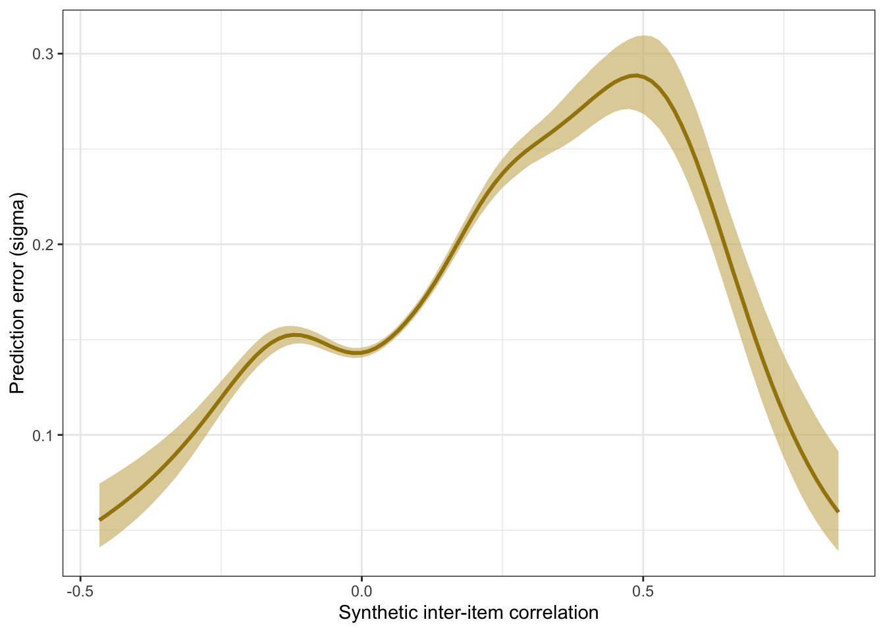
ggplot(rr_validation_llm, aes(synthetic_r, empirical_r,
ymin = empirical_r - empirical_r_se,
ymax = empirical_r + empirical_r_se)) +
geom_abline(linetype = "dashed") +
geom_point(color = "#00A0B0", alpha = 0.03, size = 1) +
geom_smooth(aes(
x = synthetic_r,
y = estimate__,
ymin = lower__,
ymax = upper__,
), stat = "identity",
color = "#a48500",
fill = "#EDC951",
data = as.data.frame(pred$synthetic_r)) +
xlab("Synthetic inter-item correlation") +
ylab("Empirical inter-item correlation") +
theme_bw() +
coord_fixed(xlim = c(-1,1), ylim = c(-1,1)) -> plot_items
plot_items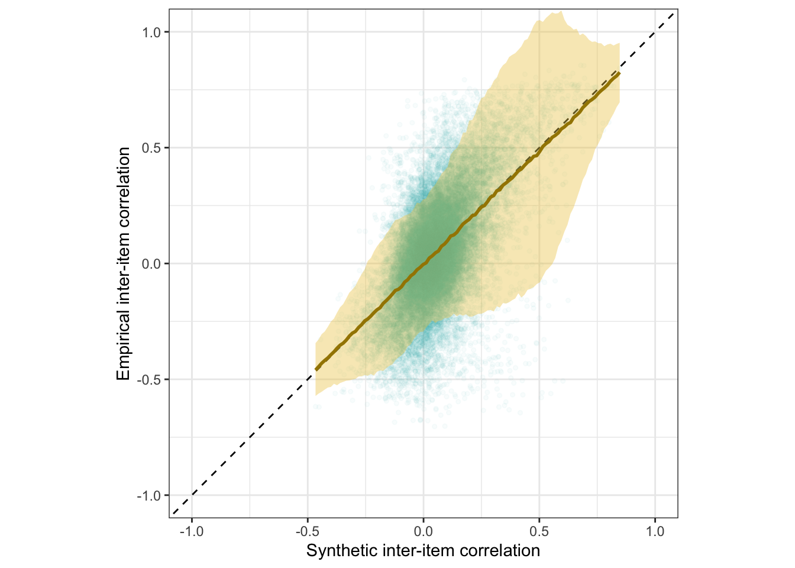
This plot shows only 2000 randomly selected item pairs to conserve memory. A full interactive plot exists, but may react slowly.
item_pair_table <- rr_validation_llm %>%
left_join(rr_validation_mapping_data %>% select(variable_1 = variable,
item_text_1 = item_text)) %>%
left_join(rr_validation_mapping_data %>% select(variable_2 = variable,
item_text_2 = item_text))
# item_pair_table %>% filter(str_length(item_text_1) < 30, str_length(item_text_2) < 30) %>%
# left_join(pt_rr_validation_llm %>% rename(synthetic_r_pt = synthetic_r)) %>%
# select(item_text_1, item_text_2, empirical_r, synthetic_r, synthetic_r_pt) %>% View()
rio::export(item_pair_table, "ignore/item_pair_table_rr_unrounded.xlsx")
rio::export(item_pair_table, "ignore/item_pair_table_rr.feather")
(item_pair_table %>%
mutate(synthetic_r = round(synthetic_r, 2),
empirical_r = round(empirical_r, 2),
items = str_replace_all(str_c(item_text_1, "\n", item_text_2),
"_+", " ")) %>%
sample_n(2000) %>%
ggplot(., aes(synthetic_r, empirical_r,
# ymin = empirical_r - empirical_r_se,
# ymax = empirical_r + empirical_r_se,
label = items)) +
geom_abline(linetype = "dashed") +
geom_point(color = "#00A0B0", alpha = 0.3, size = 1) +
xlab("Synthetic inter-item correlation") +
ylab("Empirical inter-item correlation") +
theme_bw() +
coord_fixed(xlim = c(-1,1), ylim = c(-1,1))) %>%
ggplotly()item_pair_table_numeric <- item_pair_table
item_pair_table <- item_pair_table %>%
mutate(empirical_r = sprintf("%.2f±%.3f", empirical_r,
empirical_r_se),
synthetic_r = sprintf("%.2f", synthetic_r)) %>%
select(item_text_1, item_text_2, empirical_r, synthetic_r)
rio::export(item_pair_table, "item_pair_table_rr.xlsx")# For item correlations
m_synth_r_items_poly <- brm(
bf(empirical_r | mi(empirical_r_se) ~ synthetic_r + (1|mm(variable_1, variable_2)),
sigma ~ poly(synthetic_r, degree = 3)), data = rr_validation_llm,
file = "ignore/m_synth_rr_r_items_lm_poly")
newdata <- m_synth_r_items_poly$data %>% select(empirical_r, synthetic_r, empirical_r_se)
epreds <- epred_draws(newdata = newdata, obj = m_synth_r_items_poly, re_formula = NA, ndraws = 200)
preds <- predicted_draws(newdata = newdata, obj = m_synth_r_items_poly, re_formula = NA, ndraws = 200)
epred_preds <- epreds %>% left_join(preds)
by_draw <- epred_preds %>% group_by(.draw) %>%
summarise(.epred = var(.epred),
.prediction = var(.prediction),
sigma = sqrt(.prediction - .epred),
latent_r = sqrt(.epred/.prediction))
accuracy_bayes_items_poly <- by_draw %>% mean_hdci(latent_r)
bind_rows(
accuracy_bayes_items %>%
mutate(model = "spline", kind = "latent outcome (Bayesian EIV)") %>%
select(model, kind, accuracy = latent_r, conf.low = .lower, conf.high = .upper),
accuracy_bayes_items_poly %>%
mutate(model = "polynomial", kind = "latent outcome (Bayesian EIV)") %>%
select(model, kind, accuracy = latent_r, conf.low = .lower, conf.high = .upper)
) %>%
knitr::kable(digits = 2, caption = "Comparing spline and polynomial models for item correlations")| model | kind | accuracy | conf.low | conf.high |
|---|---|---|---|---|
| spline | latent outcome (Bayesian EIV) | 0.59 | 0.58 | 0.61 |
| polynomial | latent outcome (Bayesian EIV) | 0.59 | 0.58 | 0.60 |
plot_prediction_error_items_poly <- plot(conditional_effects(m_synth_r_items_poly, dpar = "sigma"), plot = F)[[1]] +
theme_bw() +
xlab("Synthetic inter-item correlation") +
ylab("Prediction error (sigma)") +
geom_smooth(stat = "identity", color = "#a48500", fill = "#EDC951")
plot_prediction_error_items_poly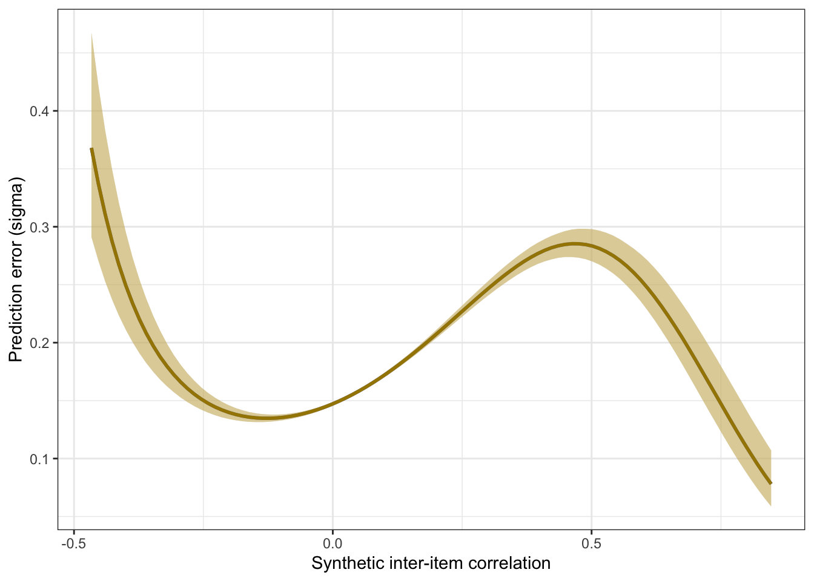
instruments <- rio::import("rr_used_measures.xlsx") %>% as_tibble()
rr_validation_llm_domain <- rr_validation_llm %>%
left_join(instruments %>% select(InstrumentA = Measure, DomainA = Domain), by = "InstrumentA") %>%
left_join(instruments %>% select(InstrumentB = Measure, DomainB = Domain), by = "InstrumentB")
accuracy_within_domains <- rr_validation_llm_domain %>%
filter(DomainA == DomainB) %>%
group_by(DomainA) %>%
summarise(broom::tidy(cor.test(synthetic_r, empirical_r)), pt_cor = cor(pt_synthetic_r, empirical_r), rmse = sqrt(mean((empirical_r - synthetic_r)^2)), pt_rmse = sqrt(mean((empirical_r - pt_synthetic_r)^2)), sd_emp_r = sd(empirical_r), mean_abs_r = mean(abs(empirical_r)), mean_r = mean(empirical_r), pos_sign = mean(sign(empirical_r) > 0), n = n()) %>%
select(domain = DomainA, r = estimate, conf.low, conf.high, pt_cor, rmse, pt_rmse, n, sd_emp_r, mean_abs_r, mean_r, pos_sign) %>%
arrange(r)
accuracy_within_domains %>%
kable(digits = 2, caption = "Accuracy by domain when both items are from the same domain")| domain | r | conf.low | conf.high | pt_cor | rmse | pt_rmse | n | sd_emp_r | mean_abs_r | mean_r | pos_sign |
|---|---|---|---|---|---|---|---|---|---|---|---|
| attitudes | 0.34 | 0.23 | 0.43 | 0.18 | 0.26 | 0.36 | 300 | 0.23 | 0.16 | 0.03 | 0.53 |
| personality | 0.42 | 0.37 | 0.47 | 0.06 | 0.20 | 0.33 | 1035 | 0.21 | 0.16 | 0.02 | 0.55 |
| clinical | 0.50 | 0.48 | 0.52 | 0.37 | 0.25 | 0.29 | 5050 | 0.28 | 0.26 | 0.16 | 0.78 |
| social | 0.72 | 0.69 | 0.74 | 0.25 | 0.19 | 0.31 | 1081 | 0.27 | 0.21 | 0.06 | 0.58 |
| occupational | 0.75 | 0.70 | 0.79 | 0.48 | 0.28 | 0.41 | 351 | 0.40 | 0.46 | 0.28 | 0.74 |
accuracy_between_instruments <- bind_rows(rr_validation_llm_domain %>%
filter(InstrumentA != InstrumentB),
rr_validation_llm_domain %>%
filter(InstrumentA != InstrumentB) %>%
rename(InstrumentA = InstrumentB, InstrumentB = InstrumentA)) %>%
group_by(InstrumentA) %>%
summarise(broom::tidy(cor.test(synthetic_r, empirical_r)), pt_cor = cor(pt_synthetic_r, empirical_r), sd_emp_r = sd(empirical_r), n = n()) %>%
select(instrument = InstrumentA, r = estimate, conf.low, conf.high, pt_cor, n, sd_emp_r) %>%
arrange(r) %>%
mutate(instrument = fct_inorder(instrument))
accuracy_between_instruments %>%
kable(digits = 2, caption = "Accuracy by instrument (for items belonging to other instruments)")| instrument | r | conf.low | conf.high | pt_cor | n | sd_emp_r |
|---|---|---|---|---|---|---|
| Authoritarianism Short Scale | 0.20 | 0.16 | 0.24 | 0.23 | 2133 | 0.11 |
| New Ecological Paradigm Scale | 0.20 | 0.16 | 0.24 | 0.12 | 2360 | 0.12 |
| Disgust Avoidance Questionnaire | 0.24 | 0.21 | 0.27 | 0.18 | 3893 | 0.08 |
| Perth Alexithymia Questionnaire | 0.34 | 0.30 | 0.37 | 0.15 | 2360 | 0.17 |
| Moral Foundations Questionnaire | 0.34 | 0.31 | 0.37 | 0.26 | 2585 | 0.12 |
| Attitudes Toward AI in Defense Scale | 0.35 | 0.30 | 0.39 | 0.11 | 1440 | 0.10 |
| HEXACO-60 | 0.36 | 0.34 | 0.38 | 0.08 | 6480 | 0.15 |
| Fear of COVID-19 Scale | 0.36 | 0.32 | 0.40 | 0.23 | 1673 | 0.10 |
| Survey Attitude Scale | 0.37 | 0.33 | 0.40 | 0.12 | 2133 | 0.10 |
| Perceived Stress Scale | 0.50 | 0.48 | 0.53 | 0.18 | 3248 | 0.27 |
| Perseverative Thinking Questionnaire | 0.51 | 0.49 | 0.54 | 0.31 | 3465 | 0.28 |
| Obsessive–Compulsive Inventory (Revised) | 0.56 | 0.54 | 0.58 | 0.23 | 4104 | 0.17 |
| Chronotype Questionnaire | 0.60 | 0.58 | 0.62 | 0.19 | 3680 | 0.21 |
| Revised Adult Attachment Scale | 0.62 | 0.59 | 0.64 | 0.23 | 2585 | 0.21 |
| Work Gratitude Scale | 0.67 | 0.65 | 0.69 | 0.36 | 2360 | 0.19 |
| Center for Epidemiological Studies Depression Scale | 0.68 | 0.67 | 0.70 | 0.38 | 4520 | 0.28 |
| Utrecht Work Engagement Scale (Short Version) | 0.70 | 0.67 | 0.72 | 0.36 | 2133 | 0.24 |
| Oldenburg Burnout Inventory (English Translation) | 0.71 | 0.68 | 0.73 | 0.30 | 1904 | 0.26 |
| UCLA Loneliness Scale (Short Form) | 0.72 | 0.69 | 0.74 | 0.33 | 1904 | 0.27 |
| Positive and Negative Affect Schedule | 0.72 | 0.70 | 0.74 | 0.28 | 1904 | 0.28 |
accuracy_within_instruments <- rr_validation_llm %>%
filter(InstrumentA == InstrumentB) %>%
left_join(items_by_scale %>% select(variable_1 = variable, keyed = keyed) %>% distinct()) %>%
group_by(InstrumentA) %>%
summarise(broom::tidy(cor.test(synthetic_r, empirical_r)), pt_cor = cor(pt_synthetic_r, empirical_r), sd_emp_r = sd(empirical_r), n = n(), reverse_item_percentage = sum(keyed == -1, na.rm = TRUE)/n()) %>%
select(instrument = InstrumentA, r = estimate, conf.low, conf.high, pt_cor, n, sd_emp_r, reverse_item_percentage) %>%
arrange(r) %>%
mutate(instrument = factor(instrument, levels = levels(accuracy_between_instruments$instrument)))
accuracy_within_instruments %>%
mutate(accuracy = sprintf("%.2f [%.2f;%.2f]", r, conf.low, conf.high)) %>%
select(-c(r, conf.low, conf.high)) %>%
relocate(accuracy, .before = pt_cor) %>%
rename(pt_accuracy = pt_cor) %>%
kable(digits = 2, caption = "Accuracy by instrument (within items belonging to the same instrument)")| instrument | accuracy | pt_accuracy | n | sd_emp_r | reverse_item_percentage |
|---|---|---|---|---|---|
| New Ecological Paradigm Scale | 0.02 [-0.28;0.31] | -0.08 | 45 | 0.39 | 0.47 |
| Moral Foundations Questionnaire | 0.03 [-0.23;0.30] | 0.08 | 55 | 0.20 | 0.00 |
| HEXACO-60 | 0.35 [0.27;0.43] | 0.04 | 435 | 0.20 | 0.50 |
| Fear of COVID-19 Scale | 0.39 [-0.05;0.70] | 0.34 | 21 | 0.07 | 0.00 |
| Perseverative Thinking Questionnaire | 0.45 [0.28;0.59] | 0.15 | 105 | 0.09 | 0.00 |
| Authoritarianism Short Scale | 0.47 [0.17;0.69] | 0.39 | 36 | 0.10 | 0.00 |
| Perceived Stress Scale | 0.50 [0.33;0.64] | 0.31 | 91 | 0.50 | 0.48 |
| Chronotype Questionnaire | 0.57 [0.44;0.68] | 0.22 | 120 | 0.38 | 0.62 |
| Survey Attitude Scale | 0.58 [0.31;0.76] | 0.39 | 36 | 0.39 | 0.08 |
| Disgust Avoidance Questionnaire | 0.62 [0.50;0.71] | 0.56 | 136 | 0.06 | 0.00 |
| Work Gratitude Scale | 0.64 [0.43;0.79] | 0.41 | 45 | 0.10 | 0.00 |
| Revised Adult Attachment Scale | 0.71 [0.55;0.82] | 0.23 | 55 | 0.49 | 0.44 |
| Obsessive–Compulsive Inventory (Revised) | 0.71 [0.62;0.78] | 0.57 | 153 | 0.11 | 0.00 |
| Utrecht Work Engagement Scale (Short Version) | 0.79 [0.62;0.89] | 0.62 | 36 | 0.12 | 0.00 |
| Perth Alexithymia Questionnaire | 0.80 [0.67;0.89] | 0.70 | 45 | 0.14 | 0.00 |
| Oldenburg Burnout Inventory (English Translation) | 0.84 [0.68;0.92] | 0.38 | 28 | 0.54 | 0.57 |
| Attitudes Toward AI in Defense Scale | 0.86 [0.63;0.95] | 0.41 | 15 | 0.39 | 0.00 |
| Center for Epidemiological Studies Depression Scale | 0.87 [0.84;0.90] | 0.55 | 190 | 0.50 | 0.21 |
| UCLA Loneliness Scale (Short Form) | 0.93 [0.85;0.97] | 0.20 | 28 | 0.55 | 0.25 |
| Positive and Negative Affect Schedule | 0.94 [0.87;0.97] | 0.50 | 28 | 0.51 | 0.00 |
bind_rows(
within = accuracy_within_instruments,
across = accuracy_between_instruments, .id = "kind") %>%
ggplot(aes(x = instrument, r, ymin = conf.low, ymax = conf.high, shape = kind)) +
geom_point(aes(y = pt_cor, group = kind), color = "gray", position = position_dodge(width = 0.3)) +
geom_linerange(aes(ymin = pt_cor, ymax = r, group = kind), color = "gray", position = position_dodge(width = 0.3)) +
geom_pointrange(position = position_dodge(width = 0.3)) +
scale_shape_manual(values = c("within" = 19, "across" = 4), guide = "none") +
scale_color_viridis_d(end = 0.7, option = "A", guide = F) +
scale_y_continuous("Manifest accuracy") +
geom_text(aes(label = sprintf("%.2f", r)), vjust = -1, position = position_dodge(width = 0.3)) +
coord_flip()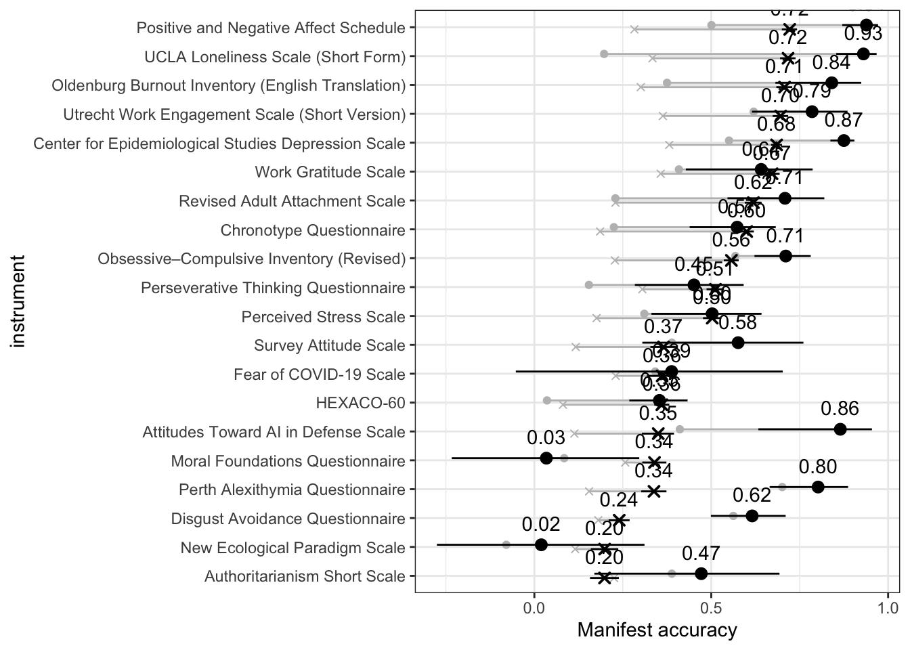
r_by_item <- rr_validation_llm %>%
# filter(InstrumentA == InstrumentB, SubscaleA == SubscaleB, ScaleA == ScaleB) %>%
left_join(items_by_scale %>% select(variable_1 = variable, keyed = keyed, item_text) %>% distinct()) %>%
group_by(variable_1) %>%
filter(n() > 3) %>%
summarise(broom::tidy(cor.test(synthetic_r, empirical_r)), pt_cor = cor(pt_synthetic_r, empirical_r), sd_emp_r = sd(empirical_r), n = n(), reverse_item_percentage = sum(keyed == -1)/n(), item_text_length = first(str_length(item_text))) %>%
select(r = estimate, conf.low, conf.high, pt_cor, n, sd_emp_r, reverse_item_percentage, item_text_length) %>%
arrange(r)
r_by_item %>% ggplot(aes(item_text_length, r, color = factor(reverse_item_percentage))) +
scale_color_viridis_d("reversed", end = 0.8) +
geom_point() + geom_smooth(method = "lm") +
ylab("Accuracy (r)")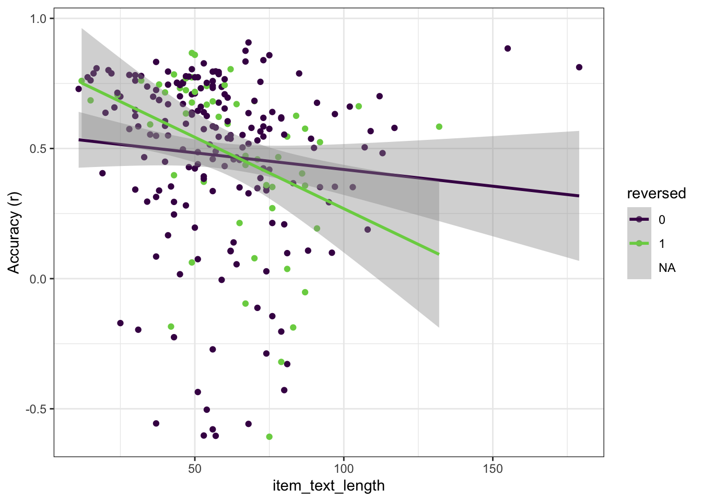
item_pair_table_numeric <- item_pair_table_numeric %>%
mutate(pronoun_1 = str_detect(item_text_1, "\\b(I|me|my|mine|myself|Me|My|Mine|Myself)\\b"),
pronoun_2 = str_detect(item_text_2, "\\b(I|me|my|mine|myself|Me|My|Mine|Myself)\\b")) %>%
mutate(pronouns_in_item_pair = case_when(
pronoun_1 == F & pronoun_2 == F ~ "neither",
pronoun_1 == T & pronoun_2 == T ~ "both",
TRUE ~ "one"
)) %>%
mutate(item_text_length_1 = str_length(item_text_1),
item_text_length_2 = str_length(item_text_2),
item_text_length = (item_text_length_1+item_text_length_2)/2) %>%
left_join(items_by_scale %>% select(variable_1 = variable, keyed_1 = keyed) %>% distinct()) %>%
left_join(items_by_scale %>% select(variable_2 = variable, keyed_2 = keyed) %>% distinct()) %>%
mutate(reversed_items = case_when(
keyed_1 == 1 & keyed_2 == 1 ~ "neither",
keyed_1 == -1 & keyed_2 == -1 ~ "both",
TRUE ~ "one"
))
options(scipen = 10)
summary(lm(empirical_r ~ synthetic_r * (pronouns_in_item_pair + reversed_items + item_text_length), item_pair_table_numeric))##
## Call:
## lm(formula = empirical_r ~ synthetic_r * (pronouns_in_item_pair +
## reversed_items + item_text_length), data = item_pair_table_numeric)
##
## Residuals:
## Min 1Q Median 3Q Max
## -1.02473 -0.10214 0.00171 0.10758 0.76774
##
## Coefficients:
## Estimate Std. Error t value Pr(>|t|)
## (Intercept) -0.01571570 0.00656285 -2.395 0.01664 *
## synthetic_r 1.54349104 0.04100884 37.638 < 2e-16 ***
## pronouns_in_item_pairneither 0.00623656 0.00566222 1.101 0.27072
## pronouns_in_item_pairone -0.00669539 0.00242107 -2.765 0.00569 **
## reversed_itemsneither 0.02400836 0.00529971 4.530 0.00000592 ***
## reversed_itemsone -0.01776464 0.00542131 -3.277 0.00105 **
## item_text_length 0.00017506 0.00006971 2.511 0.01204 *
## synthetic_r:pronouns_in_item_pairneither -0.63680974 0.03385991 -18.807 < 2e-16 ***
## synthetic_r:pronouns_in_item_pairone -0.28711562 0.02033846 -14.117 < 2e-16 ***
## synthetic_r:reversed_itemsneither -0.15446421 0.03441803 -4.488 0.00000722 ***
## synthetic_r:reversed_itemsone -0.33280281 0.03602897 -9.237 < 2e-16 ***
## synthetic_r:item_text_length -0.00473406 0.00045087 -10.500 < 2e-16 ***
## ---
## Signif. codes: 0 '***' 0.001 '**' 0.01 '*' 0.05 '.' 0.1 ' ' 1
##
## Residual standard error: 0.1767 on 30123 degrees of freedom
## Multiple R-squared: 0.3633, Adjusted R-squared: 0.363
## F-statistic: 1562 on 11 and 30123 DF, p-value: < 2.2e-16item_pair_table_numeric %>%
group_by(pronouns_in_item_pair) %>%
summarise(broom::tidy(cor.test(synthetic_r, empirical_r)), n_pairs = n()) %>%
mutate(accuracy = sprintf("%.2f [%.2f;%.2f]", estimate, conf.low, conf.high)) %>%
select(pronouns_in_item_pair, accuracy, n_pairs) %>%
kable(digits = 2, caption = "Accuracy for items with and without first person singular pronouns")| pronouns_in_item_pair | accuracy | n_pairs |
|---|---|---|
| both | 0.64 [0.64;0.65] | 17955 |
| neither | 0.27 [0.22;0.32] | 1540 |
| one | 0.41 [0.40;0.43] | 10640 |
item_pair_table_numeric %>%
group_by(sign(empirical_r), pronouns_in_item_pair) %>%
summarise(broom::tidy(cor.test(synthetic_r, empirical_r)), n_pairs = n(), sd_e = sd(empirical_r)) %>%
mutate(accuracy = sprintf("%.2f [%.2f;%.2f]", estimate, conf.low, conf.high)) %>%
select(pronouns_in_item_pair, accuracy, n_pairs, sd_e) %>%
kable(digits = 2, caption = "Accuracy for items with and without first person singular pronouns")| sign(empirical_r) | pronouns_in_item_pair | accuracy | n_pairs | sd_e |
|---|---|---|---|---|
| -1 | both | 0.35 [0.33;0.37] | 7253 | 0.13 |
| -1 | neither | -0.49 [-0.54;-0.42] | 648 | 0.13 |
| -1 | one | 0.08 [0.05;0.11] | 4347 | 0.12 |
| 1 | both | 0.59 [0.58;0.61] | 10702 | 0.17 |
| 1 | neither | 0.65 [0.61;0.69] | 892 | 0.16 |
| 1 | one | 0.42 [0.40;0.44] | 6293 | 0.13 |
Reverse items load negatively on the associated scale.
rr_validation_llm %>%
left_join(items_by_scale %>% select(variable_1 = variable, keyed_1 = keyed) %>% distinct()) %>%
left_join(items_by_scale %>% select(variable_2 = variable, keyed_2 = keyed) %>% distinct()) %>%
mutate(reversed_items = case_when(
keyed_1 == 1 & keyed_2 == 1 ~ "neither",
keyed_1 == -1 & keyed_2 == -1 ~ "both",
TRUE ~ "one"
)) %>%
group_by(reversed_items) %>%
summarise(broom::tidy(cor.test(empirical_r, synthetic_r)), n_pairs = n()) %>%
mutate(accuracy = sprintf("%.2f [%.2f;%.2f]", estimate, conf.low, conf.high)) %>%
select(reversed_items, accuracy, n_pairs) %>%
kable(digits = 2, caption = "Accuracy for reversed and non-reversed items")| reversed_items | accuracy | n_pairs |
|---|---|---|
| both | 0.64 [0.61;0.67] | 1431 |
| neither | 0.62 [0.62;0.63] | 18145 |
| one | 0.45 [0.44;0.47] | 10559 |
by_item <- bind_rows(item_pair_table_numeric,
item_pair_table_numeric %>%
select(-variable_1, -item_text_1) %>%
rename(variable_1 = variable_2, item_text_1 = item_text_2)) %>%
group_by(variable_1, item_text_1) %>%
summarise(mean_rmse = sqrt(mean((empirical_r - synthetic_r)^2))) %>%
arrange(mean_rmse)
bind_rows(head(by_item, 20),
tail(by_item, 20)) %>%
kable(digits = 2, caption = "Top and bottom 20 items by RMSE")| variable_1 | item_text_1 | mean_rmse |
|---|---|---|
| HEXACO_29 | People often call me a perfectionist. | 0.07 |
| MFQ_08 | Justice is the most important requirement for a society. | 0.09 |
| FCV19S_04 | I am afraid of losing my life because of coronavirus-19. | 0.09 |
| AAID_12 | The use of AI in Defense could save lives | 0.10 |
| KSA3_04 | We need strong leaders so that we can live safely in society. | 0.10 |
| FCV19S_01 | I am most afraid of coronavirus-19 | 0.10 |
| FCV19S_05 | When watching news and stories about coronavirus-19 on social media, I become nervous or anxious. | 0.10 |
| NEPS_06 | The earth has plenty of natural resources if we just learn how to develop them | 0.11 |
| PAQ_15 | I prefer to focus on things I can actually see or touch, rather than my emotions. | 0.11 |
| SAS_01 | I really enjoy responding to questionnaires through the mail or Internet. | 0.11 |
| SAS_02 | I really enjoy being interviewed for a survey. | 0.11 |
| HEXACO_10 | If I want something from someone, I will laugh at that person’s worst jokes. | 0.11 |
| HEXACO_13 | I am usually quite flexible in my opinions when people disagree with me. | 0.11 |
| FCV19S_07 | My heart races or palpitates when I think about getting coronavirus-19. | 0.11 |
| HEXACO_17 | Even when people make a lot of mistakes, I rarely say anything negative. | 0.11 |
| AAID_14 | The use of AI in Defense could protect critical national infrastructure | 0.11 |
| HEXACO_14 | I would get a lot of pleasure from owning expensive luxury goods. | 0.11 |
| SAS_05 | A lot can be learned from information collected through surveys. | 0.11 |
| HEXACO_27 | I always try to be accurate in my work, even at the expense of time. | 0.11 |
| MFQ_07 | One of the worst things a person could do is hurt a defenseless animal. | 0.12 |
| PTQ_12 | Thoughts just pop into my mind. | 0.26 |
| PTQ_01 | The same thoughts keep going through my mind again and again. | 0.26 |
| PSS_05 | In the last month, how often have you felt that you were effectively coping with important changes that were occurring in your life? | 0.26 |
| CESD_04 | I felt that I was just as good as other people. | 0.26 |
| CESD_07 | I felt that everything I did was an effort. | 0.27 |
| PTQ_13 | I feel driven to continue dwelling on the same issue. | 0.27 |
| CESD_16 | I enjoyed life. | 0.27 |
| UWES9_09 | I get carried away when I am working. | 0.27 |
| PTQ_03 | I can’t stop dwelling on negative experiences or problems. | 0.27 |
| PTQ_04 | I think about many problems without solving any of them. | 0.28 |
| PSS_08 | In the last month, how often have you found that you could not cope with all the things that you had to do? | 0.28 |
| CQ_06 | My mood stays the same throughout the day. | 0.28 |
| PSS_14 | In the last month, how often have you felt difficulties were piling up so high that you could not overcome them? | 0.29 |
| PSS_06 | In the last month, how often have you felt confident about your ability to handle your personal problems? | 0.29 |
| PSS_03 | In the last month, how often have you felt nervous and “stressed”? | 0.29 |
| PTQ_06 | My thoughts repeat themselves. | 0.29 |
| PTQ_11 | I keep thinking about the same issue all the time. | 0.29 |
| PSS_10 | In the last month, how often have you felt that you were on top of things? | 0.34 |
| PTQ_15 | My thoughts take up all my attention. | 0.34 |
| PSS_07 | In the last month, how often have you felt that things were going your way? | 0.42 |
rr_validation_llm %>%
mutate(same_instrument = if_else(InstrumentA == InstrumentB, 1, 0,0),
same_scale = if_else(ScaleA == ScaleB, 1,0,0),
same_subscale = if_else(same_scale & SubscaleA == SubscaleB, 1,0,0)) %>%
group_by(same_scale, same_instrument, same_subscale) %>%
summarise(broom::tidy(cor.test(synthetic_r, empirical_r)), sd_emp_r = sd(empirical_r), n = n()) %>%
mutate(accuracy = sprintf("%.2f [%.2f;%.2f]", estimate, conf.low, conf.high)) %>%
select(same_instrument, same_scale, same_subscale, accuracy, n, sd_emp_r) %>%
arrange(same_instrument, same_scale, same_subscale) %>%
kable(digits = 2, caption = "Accuracy within and across scales")| same_instrument | same_scale | same_subscale | accuracy | n | sd_emp_r |
|---|---|---|---|---|---|
| 0 | 0 | 0 | 0.55 [0.54;0.56] | 28432 | 0.20 |
| 1 | 0 | 0 | 0.32 [0.25;0.39] | 644 | 0.31 |
| 1 | 1 | 0 | 0.62 [0.56;0.66] | 592 | 0.37 |
| 1 | 1 | 1 | 0.58 [0.52;0.64] | 467 | 0.49 |
item_variances <- rr_validation_human_data %>%
haven::zap_labels() %>%
summarise_all(~ sd(., na.rm = T)) %>%
pivot_longer(everything(), names_to = "variable", values_to = "item_sd")
by_max_cov <- rr_validation_llm %>%
left_join(item_variances, by = c("variable_1" = "variable")) %>%
left_join(item_variances, by = c("variable_2" = "variable"), suffix = c("_1", "_2")) %>%
mutate(max_covariance = ceiling((item_sd_1 * item_sd_2)*10)/10)
rs_by_max_cov <- by_max_cov %>%
group_by(max_covariance) %>%
filter(n() > 3) %>%
summarise(broom::tidy(cor.test(synthetic_r, empirical_r)), sd_emp_r = sd(empirical_r), n = n()) %>%
select(max_covariance, r = estimate, conf.low, conf.high, n, sd_emp_r) %>%
arrange(max_covariance)
rs_by_max_cov %>% ggplot(aes(max_covariance, r, ymin = conf.low, ymax = conf.high)) +
geom_pointrange()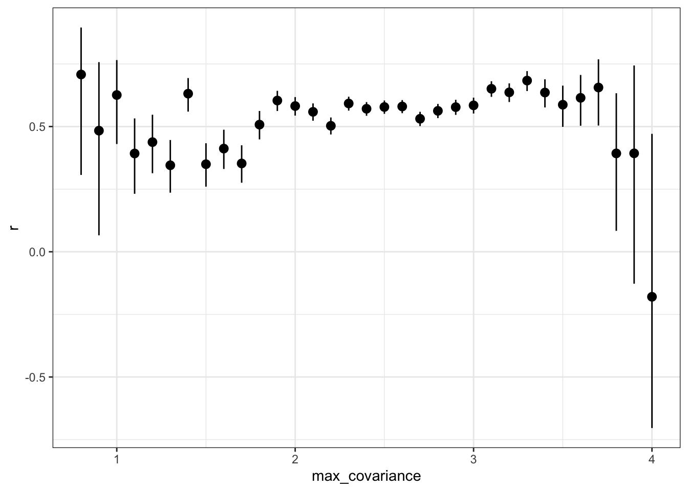
by_max_cov%>%
filter(max_covariance >= 2) %>%
summarise(broom::tidy(cor.test(synthetic_r, empirical_r)), sd_emp_r = sd(empirical_r), n = n()) %>%
kable(digits = 2, caption = "Accuracy for items with a maximal potential covariance (product of SDs) of at least 2")| estimate | statistic | p.value | parameter | conf.low | conf.high | method | alternative | sd_emp_r | n |
|---|---|---|---|---|---|---|---|---|---|
| 0.58 | 114.91 | 0 | 26169 | 0.57 | 0.59 | Pearson’s product-moment correlation | two.sided | 0.23 | 26171 |
ggplot(pt_rr_validation_llm, aes(synthetic_r, empirical_r,
ymin = empirical_r - empirical_r_se,
ymax = empirical_r + empirical_r_se)) +
geom_abline(linetype = "dashed") +
geom_point(color = "#00A0B0", alpha = 0.03, size = 1) +
xlab("Synthetic inter-item correlation") +
ylab("Empirical inter-item correlation") +
theme_bw() +
coord_fixed(xlim = c(-1,1), ylim = c(-1,1)) -> pt_plot_items
pt_plot_items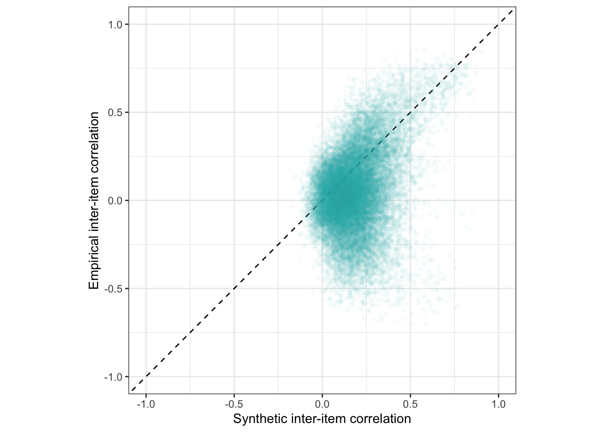
rr_validation_llm %>% summarise(
mean(synthetic_r),
mean(empirical_r),
mean(abs(synthetic_r)),
mean(abs(empirical_r)),
prop_negative = sum(empirical_r < 0)/n(),
prop_pos = sum(empirical_r > 0)/n(),
`prop_below_-.10` = sum(empirical_r < -0.1)/n(),
`prop_above_.10` = sum(empirical_r > 0.1)/n(),
) %>% kable(digits = 2, caption = "Average correlations")| mean(synthetic_r) | mean(empirical_r) | mean(abs(synthetic_r)) | mean(abs(empirical_r)) | prop_negative | prop_pos | prop_below_-.10 | prop_above_.10 |
|---|---|---|---|---|---|---|---|
| 0.06 | 0.05 | 0.1 | 0.17 | 0.41 | 0.59 | 0.22 | 0.38 |
## # A tibble: 1 × 2
## `mean(sign(synthetic_r) > 0)` `mean(sign(empirical_r) > 0)`
## <dbl> <dbl>
## 1 0.673 0.594What if a human in the loop flipped the sign?
rr_validation_llm %>% filter(abs(synthetic_r) >= .10) %>%
group_by(sign(synthetic_r)) %>%
summarise(round(1 - mean(sign(empirical_r) == sign(synthetic_r)),2))## # A tibble: 2 × 2
## `sign(synthetic_r)` `round(1 - mean(sign(empirical_r) == sign(synthetic_r)), 2)`
## <dbl> <dbl>
## 1 -1 0.16
## 2 1 0.19rr_validation_llm %>%
group_by(sign(synthetic_r)) %>%
summarise(round(1 - mean(sign(empirical_r) == sign(synthetic_r)),2))## # A tibble: 2 × 2
## `sign(synthetic_r)` `round(1 - mean(sign(empirical_r) == sign(synthetic_r)), 2)`
## <dbl> <dbl>
## 1 -1 0.37
## 2 1 0.3cor_switch <- rr_validation_llm %>% mutate(synthetic_r = if_else(abs(synthetic_r) <= .10 | sign(synthetic_r) == sign(empirical_r), synthetic_r,
-1*synthetic_r)) %>%
{ broom::tidy(cor.test(.$synthetic_r, .$empirical_r)) }
cor_switch %>% select(accuracy = estimate, conf.low, conf.high) %>% mutate(kind = "manifest") %>% kable(caption = "If a human user flipped the sign to be correct for all synthetic estimates with an absolute magnitude bigger than .10", digits = 2)| accuracy | conf.low | conf.high | kind |
|---|---|---|---|
| 0.68 | 0.68 | 0.69 | manifest |
cor_abs <- broom::tidy(cor.test(abs(rr_validation_llm$synthetic_r), abs(rr_validation_llm$empirical_r)))
cor_neg <- rr_validation_llm %>% filter(empirical_r < 0) %>%
{ broom::tidy(cor.test(.$synthetic_r, .$empirical_r)) }
cor_pos <- rr_validation_llm %>% filter(empirical_r > 0) %>%
{ broom::tidy(cor.test(.$synthetic_r, .$empirical_r)) }
ggplot(rr_validation_llm, aes(abs(synthetic_r), abs(empirical_r), color = factor(sign(empirical_r)))) +
annotate("text", size = 3, x = 0, y = 0.98, vjust = 0, hjust = 0, label = with(cor_abs, { sprintf("accuracy absolute r = %.2f [%.2f;%.2f]", estimate, conf.low, conf.high) }), color = 'black') +
annotate("text", size = 3, x = 0, y = 0.9, vjust = 0, hjust = 0, label = with(cor_neg, { sprintf("accuracy negative r = %.2f [%.2f;%.2f]", estimate, conf.low, conf.high) }), color = "#3366AA") +
annotate("text", size = 3, x = 0, y = 0.82, vjust = 0, hjust = 0, label = with(cor_pos, { sprintf("accuracy positive r = %.2f [%.2f;%.2f]", estimate, conf.low, conf.high) }), color = "#00A0B0") +
geom_abline(linetype = "dashed") +
geom_point( alpha = 0.1, size = 1) +
geom_smooth(method = "lm") +
scale_color_manual("Sign of emp. r", values = c("1" = "#00A0B0", "-1" = "#3366AA")) +
xlab("Absolute synthetic inter-item correlation") +
ylab("Absolute empirical inter-item correlation") +
theme_bw() +
coord_fixed(xlim = c(0,1), ylim = c(0,1)) -> abs_plot_items
abs_plot_items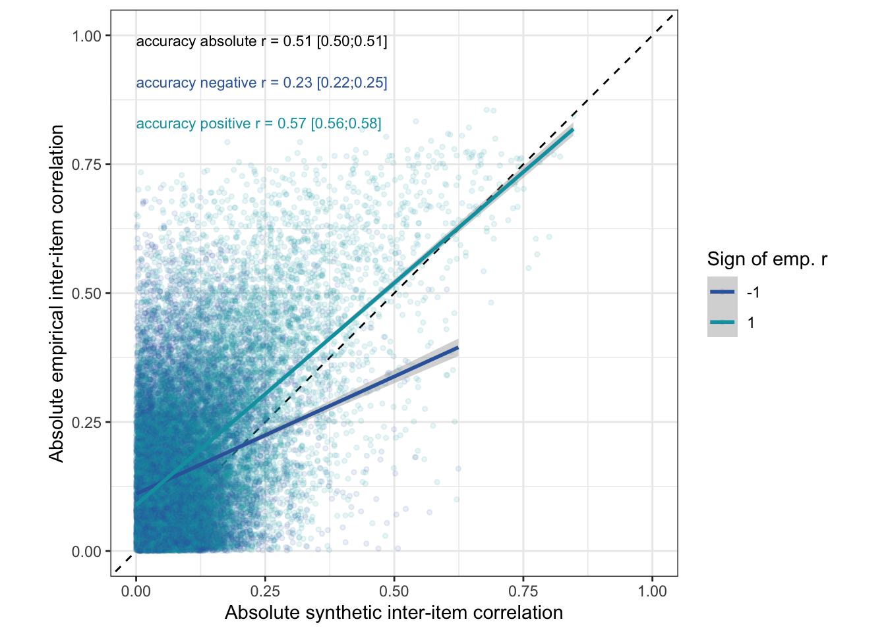
main_qs <- c("AAID", "PANAS", "PAQ", "PSS", "NEPS", "ULS", "FCV", "DAQ", "CESD", "HEXACO", "OCIR", "PTQ", "RAAS", "KSA", "SAS", "MFQ", "CQ", "OLBI", "UWES", "WGS")
rr_human_data_all = rio::import("data/processed/sosci_labelled_with_exclusion_criteria.rds")
manifest_and_latent_r <- function(data) {
data <- data %>%
select(starts_with(main_qs)) %>%
select(-ends_with("_R")) %>%
longcor() %>%
left_join(rr_validation_llm %>% select(variable_1, variable_2, synthetic_r))
se2 <- mean(data$empirical_r_se^2)
model <- paste0('
# Latent variables
PearsonLatent =~ 1*empirical_r
# Fixing error variances based on known standard errors
empirical_r ~~ ',se2,'*empirical_r
# Relationship between latent variables
PearsonLatent ~~ synthetic_r
')
fit <- sem(model, data = data)
standardizedsolution(fit) %>%
filter(lhs == "PearsonLatent", rhs == "synthetic_r") %>%
mutate(model = "fine-tuned", kind = "latent outcome (SEM)") %>%
select(model, kind, accuracy = est.std,
conf.low = ci.lower, conf.high = ci.upper) %>%
bind_rows(
broom::tidy(cor.test(data$empirical_r, data$synthetic_r)) %>%
mutate(kind = "manifest") %>%
rename(accuracy = estimate) %>%
mutate(model = "fine-tuned")) %>%
mutate(`max N` = max(data$pairwise_n))
}
r_all <- rr_human_data_all %>%
manifest_and_latent_r() %>%
mutate(`exclusion criteria` = "No exclusions")
r_main <- rr_human_data_all %>%
mutate(time_per_item_outlier = time_per_item < 2,
even_odd_outlier = even_odd >= -.45,
psychsyn_outlier = psychsyn < 0.22,
psychant_outlier = psychant > -0.03,
mahal_outlier = careless::mahad(rr_human_data_all %>% select(starts_with(main_qs)), plot = FALSE, flag = TRUE, confidence = .99)$flagged) %>%
mutate(included = !not_serious & !time_per_item_outlier &
!even_odd_outlier & !psychsyn_outlier & !psychant_outlier & !mahal_flagged) %>%
filter(included) %>%
manifest_and_latent_r() %>%
mutate(`exclusion criteria` = "Adapted: <br>- exclude non-serious respondents<br>- item response time < 2s<br>- odd-even r <= .45<br>- psychometric synonym r < .22<br>- psychometric antonym r > -0.03<br>- Mahalanobis distance set for 99% specificity")
r_goldammer_1 <- rr_human_data_all %>%
mutate(time_per_item_outlier = time_per_item < 2,
even_odd_outlier = even_odd > -.30,
psychsyn_outlier = psychsyn < 0.22,
psychant_outlier = psychant > -0.03,
mahal_outlier = careless::mahad(rr_human_data_all %>% select(starts_with(main_qs)), plot = FALSE, flag = TRUE, confidence = .999)$flagged) %>%
mutate(included = !time_per_item_outlier & !even_odd_outlier & !psychsyn_outlier & !psychant_outlier & !mahal_flagged) %>%
filter(included) %>%
manifest_and_latent_r() %>%
mutate(`exclusion criteria` = "Goldammer heuristic: <br>- item response time < 2s<br>- odd-even r < .30<br>- psychometric synonym r < .22<br>- psychometric antonym r > -0.03<br>- Mahalanobis distance set for 999% specificity")
r_goldammer_2 <- rr_human_data_all %>%
mutate(time_per_item_outlier = time_per_item < 5.56,
even_odd_outlier = even_odd > -.42,
psychsyn_outlier = psychsyn < -0.03,
psychant_outlier = psychant > .36,
mahal_outlier = careless::mahad(rr_human_data_all %>% select(starts_with(main_qs)), plot = FALSE, flag = TRUE, confidence = .95)$flagged) %>%
mutate(included = !time_per_item_outlier & !even_odd_outlier & !psychsyn_outlier & !psychant_outlier & !mahal_flagged) %>%
filter(included) %>%
manifest_and_latent_r() %>%
mutate(`exclusion criteria` = "Goldammer 95% specificity: <br>- item response time < 5.56s<br>- odd-even r < .42<br>- psychometric synonym r < -0.03<br>- psychometric antonym r > .36<br>- Mahalanobis distance set for 95% specificity")
r_goldammer_3 <- rr_human_data_all %>%
mutate(time_per_item_outlier = time_per_item < 4.97,
even_odd_outlier = even_odd > -.26,
psychsyn_outlier = psychsyn < -0.30,
psychant_outlier = psychant > .55,
mahal_outlier = careless::mahad(rr_human_data_all %>% select(starts_with(main_qs)), plot = FALSE, flag = TRUE, confidence = .99)$flagged) %>%
mutate(included = !time_per_item_outlier & !even_odd_outlier & !psychsyn_outlier & !psychant_outlier & !mahal_flagged) %>%
filter(included) %>%
manifest_and_latent_r() %>%
mutate(`exclusion criteria` = "Goldammer 99% specificity: <br>- item response time < 5.56s<br>- odd-even r < .42<br>- psychometric synonym r < -0.03<br>- psychometric antonym r > .36<br>- Mahalanobis distance set for 99% specificity")
r_strict_reading_of_prereg <- rr_human_data_all %>%
mutate(psychsyn_outlier = psychsyn < 0.6,
psychant_outlier = psychant > -0.4,
not_us_citizen = Nationality != "United States"
) %>%
filter(if_all(c(longstring_outlier, `mahal_dist_outlier_.5`, psychsyn_outlier, psychant_outlier, even_odd_outlier, not_us_citizen), ~ . == FALSE)) %>%
manifest_and_latent_r() %>%
mutate(`exclusion criteria` = "Strict preregistered criteria: <br>- odd-even r < mean + 0.2 * SD<br>- psychometric synonym r < .60<br>- psychometric antonym r > -0.40<br>- Mahalanobis distance < mean + 0.5 * SD<br>-Not US citizen")
r_main_first_450 <- rr_human_data_all %>%
mutate(mahal_outlier = careless::mahad(rr_human_data_all %>% select(starts_with(main_qs)), plot = FALSE, flag = TRUE, confidence = .99)$flagged) %>%
arrange(`Completed at`) %>%
filter(row_number () <= 450) %>%
mutate(time_per_item_outlier = time_per_item < 2,
even_odd_outlier = even_odd >= -.45,
psychsyn_outlier = psychsyn < 0.22,
psychant_outlier = psychant > -0.03) %>%
mutate(included = !not_serious & !time_per_item_outlier &
!even_odd_outlier & !psychsyn_outlier & !psychant_outlier & !mahal_flagged) %>%
filter(included) %>%
manifest_and_latent_r() %>%
mutate(`exclusion criteria` = "Adapted + Prereg N: <br>- the adapted criteria<br>- Only the first 450 participants, our preregistered sample size.")
r_main_us <- rr_human_data_all %>%
mutate(time_per_item_outlier = time_per_item < 2,
even_odd_outlier = even_odd >= -.45,
psychsyn_outlier = psychsyn < 0.22,
psychant_outlier = psychant > -0.03,
mahal_outlier = careless::mahad(rr_human_data_all %>% select(starts_with(main_qs)), plot = FALSE, flag = TRUE, confidence = .99)$flagged,
us_citizen = Nationality == "United States",
english_first_language = Language == "English") %>%
mutate(included = !not_serious & !time_per_item_outlier &
!even_odd_outlier & !psychsyn_outlier & !psychant_outlier & !mahal_flagged & us_citizen & english_first_language) %>%
filter(included) %>%
manifest_and_latent_r() %>%
mutate(`exclusion criteria` = "Adapted + US English: <br>- the adapted criteria<br>- US citizens, not just residents,- English first language")
r_main_approvals <- rr_human_data_all %>%
mutate(time_per_item_outlier = time_per_item < 2,
even_odd_outlier = even_odd >= -.45,
psychsyn_outlier = psychsyn < 0.22,
psychant_outlier = psychant > -0.03,
mahal_outlier = careless::mahad(rr_human_data_all %>% select(starts_with(main_qs)), plot = FALSE, flag = TRUE, confidence = .99)$flagged,
us_citizen = Nationality == "United States",
more_than_20_approvals = `Total approvals` > 20,
english_first_language = Language == "English") %>%
mutate(included = !not_serious & !time_per_item_outlier &
!even_odd_outlier & !psychsyn_outlier & !psychant_outlier & !mahal_flagged & us_citizen & more_than_20_approvals) %>%
filter(included) %>%
manifest_and_latent_r() %>%
mutate(`exclusion criteria` = "Adapted + US + > 20 approvals: <br>- the adapted criteria<br>- US citizens, not just residents,- More than 20 approvals")
r_adapted_reading_of_prereg <- rr_human_data_all %>%
mutate(psychsyn_outlier = psychsyn < 0.22,
psychant_outlier = psychant > -0.03) %>%
filter(if_all(c(`mahal_dist_outlier_.5`, psychsyn_outlier, psychant_outlier, even_odd_outlier), ~ . == FALSE)) %>%
manifest_and_latent_r() %>%
mutate(`exclusion criteria` = "Corrected prereg criteria:<br>- odd-even r < mean + 0.2 * SD,<br>- psychometric synonym r < .22,<br> - psychometric antonym r > -0.03, <br>- Mahalanobis distance < mean + 0.5 * SD")The manifest accuracy is expected to decrease slightly with sample size because it is attenuated by sampling error in the empirical correlations. The latent accuracy should only grow more uncertain with decreased sample size.
exclusion_criteria <- bind_rows(
r_all, r_main, r_strict_reading_of_prereg, r_adapted_reading_of_prereg,
r_goldammer_1, r_goldammer_2, r_goldammer_3, r_main_us, r_main_approvals,
r_main_first_450
)
exclusion_criteria %>%
select(`exclusion criteria`, model, kind, accuracy, conf.low, conf.high, `max N`) %>%
knitr::kable(digits = 2, caption = "Accuracy when human data is filtered by different exclusion criteria", format = "markdown")| exclusion criteria | model | kind | accuracy | conf.low | conf.high | max N |
|---|---|---|---|---|---|---|
| No exclusions | fine-tuned | latent outcome (SEM) | 0.59 | 0.58 | 0.59 | 470 |
| No exclusions | fine-tuned | manifest | 0.57 | 0.56 | 0.58 | 470 |
| Adapted: - exclude non-serious respondents - item response time < 2s - odd-even r <= .45 - psychometric synonym r < .22 - psychometric antonym r > -0.03 - Mahalanobis distance set for 99% specificity |
fine-tuned | latent outcome (SEM) | 0.58 | 0.58 | 0.59 | 336 |
| Adapted: - exclude non-serious respondents - item response time < 2s - odd-even r <= .45 - psychometric synonym r < .22 - psychometric antonym r > -0.03 - Mahalanobis distance set for 99% specificity |
fine-tuned | manifest | 0.57 | 0.56 | 0.58 | 336 |
| Strict preregistered criteria: - odd-even r < mean + 0.2 * SD - psychometric synonym r < .60 - psychometric antonym r > -0.40 - Mahalanobis distance < mean + 0.5 * SD -Not US citizen |
fine-tuned | latent outcome (SEM) | 0.57 | 0.56 | 0.58 | 116 |
| Strict preregistered criteria: - odd-even r < mean + 0.2 * SD - psychometric synonym r < .60 - psychometric antonym r > -0.40 - Mahalanobis distance < mean + 0.5 * SD -Not US citizen |
fine-tuned | manifest | 0.54 | 0.53 | 0.54 | 116 |
| Corrected prereg criteria: - odd-even r < mean + 0.2 * SD, - psychometric synonym r < .22, - psychometric antonym r > -0.03, - Mahalanobis distance < mean + 0.5 * SD |
fine-tuned | latent outcome (SEM) | 0.58 | 0.58 | 0.59 | 291 |
| Corrected prereg criteria: - odd-even r < mean + 0.2 * SD, - psychometric synonym r < .22, - psychometric antonym r > -0.03, - Mahalanobis distance < mean + 0.5 * SD |
fine-tuned | manifest | 0.57 | 0.56 | 0.57 | 291 |
| Goldammer heuristic: - item response time < 2s - odd-even r < .30 - psychometric synonym r < .22 - psychometric antonym r > -0.03 - Mahalanobis distance set for 999% specificity |
fine-tuned | latent outcome (SEM) | 0.58 | 0.58 | 0.59 | 341 |
| Goldammer heuristic: - item response time < 2s - odd-even r < .30 - psychometric synonym r < .22 - psychometric antonym r > -0.03 - Mahalanobis distance set for 999% specificity |
fine-tuned | manifest | 0.57 | 0.56 | 0.58 | 341 |
| Goldammer 95% specificity: - item response time < 5.56s - odd-even r < .42 - psychometric synonym r < -0.03 - psychometric antonym r > .36 - Mahalanobis distance set for 95% specificity |
fine-tuned | latent outcome (SEM) | 0.58 | 0.58 | 0.59 | 143 |
| Goldammer 95% specificity: - item response time < 5.56s - odd-even r < .42 - psychometric synonym r < -0.03 - psychometric antonym r > .36 - Mahalanobis distance set for 95% specificity |
fine-tuned | manifest | 0.54 | 0.53 | 0.55 | 143 |
| Goldammer 99% specificity: - item response time < 5.56s - odd-even r < .42 - psychometric synonym r < -0.03 - psychometric antonym r > .36 - Mahalanobis distance set for 99% specificity |
fine-tuned | latent outcome (SEM) | 0.58 | 0.57 | 0.59 | 185 |
| Goldammer 99% specificity: - item response time < 5.56s - odd-even r < .42 - psychometric synonym r < -0.03 - psychometric antonym r > .36 - Mahalanobis distance set for 99% specificity |
fine-tuned | manifest | 0.55 | 0.54 | 0.55 | 185 |
| Adapted + US English: - the adapted criteria - US citizens, not just residents,- English first language |
fine-tuned | latent outcome (SEM) | 0.58 | 0.57 | 0.59 | 284 |
| Adapted + US English: - the adapted criteria - US citizens, not just residents,- English first language |
fine-tuned | manifest | 0.56 | 0.56 | 0.57 | 284 |
| Adapted + US + > 20 approvals: - the adapted criteria - US citizens, not just residents,- More than 20 approvals |
fine-tuned | latent outcome (SEM) | 0.59 | 0.58 | 0.59 | 284 |
| Adapted + US + > 20 approvals: - the adapted criteria - US citizens, not just residents,- More than 20 approvals |
fine-tuned | manifest | 0.57 | 0.56 | 0.57 | 284 |
| Adapted + Prereg N: - the adapted criteria - Only the first 450 participants, our preregistered sample size. |
fine-tuned | latent outcome (SEM) | 0.58 | 0.58 | 0.59 | 325 |
| Adapted + Prereg N: - the adapted criteria - Only the first 450 participants, our preregistered sample size. |
fine-tuned | manifest | 0.57 | 0.56 | 0.58 | 325 |
exclusion_criteria %>%
mutate(`exclusion criteria` = fct_rev(fct_inorder(str_c(str_sub(`exclusion criteria`, 1, coalesce(str_locate(`exclusion criteria`, ":")[, 1]-1, -1)),", n=", `max N`)))) %>%
ggplot(aes(x = `exclusion criteria`, accuracy, ymin = conf.low, ymax = conf.high, color = kind)) +
geom_pointrange() +
scale_color_viridis_d(end = 0.7) +
geom_text(aes(label = sprintf("%.2f", accuracy)), vjust = -1) +
coord_flip()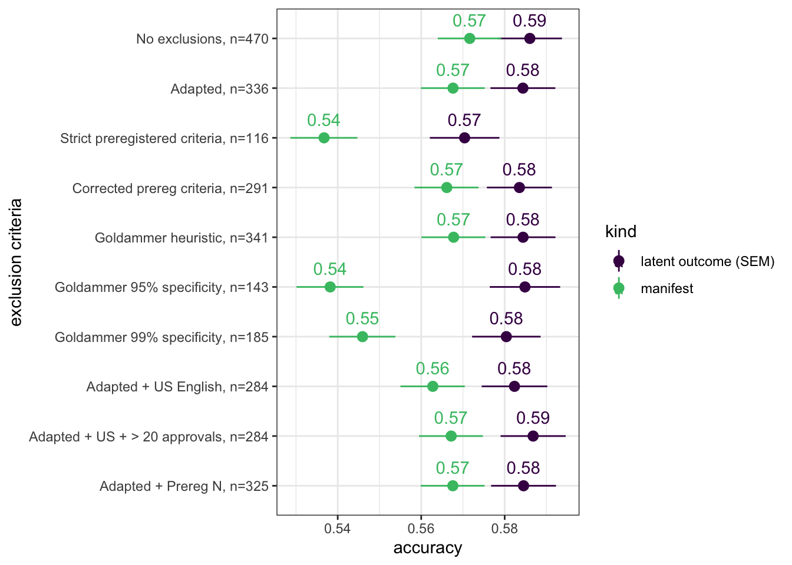
Below, we import our search results of the SBERT training corpus. We identify validation study items with matches, investigate these matches and tabulate accuracy without potentially leaked items.
leaked <- rio::import("data/intermediate/search_results.parquet") %>%
mutate(item_text = str_to_lower(item_text))
leaked_items <- leaked %>% group_by(item_text) %>% summarise(n = n())
item_pair_table_l <- item_pair_table_numeric %>%
mutate(item_text_1l = str_to_lower(item_text_1),
item_text_2l = str_to_lower(item_text_2))
items <- bind_rows(item_pair_table_l %>% select(Instrument = InstrumentA, item_textl = item_text_1l),
item_pair_table_l %>% select(Instrument = InstrumentB, item_textl = item_text_2l)) %>%
distinct()
# items %>% inner_join(leaked, by = c("item_textl" = "item_text")) %>% View
leaked_items_validation <- leaked_items %>% right_join(
items, by = c("item_text" = "item_textl")) %>%
mutate(length = str_length(item_text),
n = coalesce(n, 0))
leaked_items_validation %>% group_by(Instrument) %>%
summarise(leaked = sum(n>0), items = n(), percentage = sum(n>0)/n()*100, matches = sum(n)) %>%
arrange(percentage) %>%
kable(caption = "Number and percent of items leaked per instrument", digits = 0)| Instrument | leaked | items | percentage | matches |
|---|---|---|---|---|
| Attitudes Toward AI in Defense Scale | 0 | 6 | 0 | 0 |
| Authoritarianism Short Scale | 0 | 9 | 0 | 0 |
| Chronotype Questionnaire | 0 | 16 | 0 | 0 |
| Disgust Avoidance Questionnaire | 0 | 17 | 0 | 0 |
| Fear of COVID-19 Scale | 0 | 7 | 0 | 0 |
| HEXACO-60 | 0 | 30 | 0 | 0 |
| Obsessive–Compulsive Inventory (Revised) | 0 | 18 | 0 | 0 |
| Oldenburg Burnout Inventory (English Translation) | 0 | 8 | 0 | 0 |
| Perseverative Thinking Questionnaire | 0 | 15 | 0 | 0 |
| Perth Alexithymia Questionnaire | 0 | 10 | 0 | 0 |
| Positive and Negative Affect Schedule | 0 | 8 | 0 | 0 |
| Revised Adult Attachment Scale | 0 | 11 | 0 | 0 |
| Survey Attitude Scale | 0 | 9 | 0 | 0 |
| Work Gratitude Scale | 0 | 10 | 0 | 0 |
| Perceived Stress Scale | 1 | 14 | 7 | 1 |
| UCLA Loneliness Scale (Short Form) | 1 | 8 | 12 | 13 |
| Moral Foundations Questionnaire | 2 | 11 | 18 | 2 |
| Center for Epidemiological Studies Depression Scale | 7 | 20 | 35 | 885 |
| New Ecological Paradigm Scale | 5 | 10 | 50 | 7 |
| Utrecht Work Engagement Scale (Short Version) | 8 | 9 | 89 | 64 |
rr_validation_llm_leakage <- item_pair_table_l %>%
left_join(leaked_items_validation %>% rename(n_1 = n, item_text_1l = item_text), by = "item_text_1l") %>%
left_join(leaked_items_validation %>% rename(n_2 = n, item_text_2l = item_text), by = "item_text_2l")
rr_validation_llm_leakage %>%
group_by(possibly_leaked_instrument = str_detect(InstrumentA, "(New Ecological|Utrecht Work)") |
str_detect(InstrumentB, "(New Ecological|Utrecht Work)")) %>%
summarise(broom::tidy(cor.test(synthetic_r, empirical_r)), pt_cor = cor(pt_synthetic_r, empirical_r), rmse = sqrt(mean((empirical_r - synthetic_r)^2)), pt_rmse = sqrt(mean((empirical_r - pt_synthetic_r)^2)), n = n()) %>%
select(possibly_leaked_instrument, r = estimate, conf.low, conf.high, pt_cor, rmse, pt_rmse, n) %>%
arrange(r) %>%
kable(caption = "Accuracy by whether the instrument plausibly leaked (>=50% items found in corpus)", digits = 2)| possibly_leaked_instrument | r | conf.low | conf.high | pt_cor | rmse | pt_rmse | n |
|---|---|---|---|---|---|---|---|
| FALSE | 0.57 | 0.56 | 0.58 | 0.30 | 0.19 | 0.26 | 25651 |
| TRUE | 0.59 | 0.57 | 0.61 | 0.29 | 0.16 | 0.24 | 4484 |
rr_validation_llm_leakage %>%
group_by(occurred = n_1 > 0 | n_2 > 0) %>%
summarise(broom::tidy(cor.test(synthetic_r, empirical_r)), pt_cor = cor(pt_synthetic_r, empirical_r), rmse = sqrt(mean((empirical_r - synthetic_r)^2)), pt_rmse = sqrt(mean((empirical_r - pt_synthetic_r)^2)), n = n()) %>%
select(occurred, r = estimate, conf.low, conf.high, pt_cor, rmse, pt_rmse, n) %>%
arrange(r) %>%
kable(caption = "Accuracy by whether the item occurred in corpus (including trivially short items)", digits = 2)| occurred | r | conf.low | conf.high | pt_cor | rmse | pt_rmse | n |
|---|---|---|---|---|---|---|---|
| FALSE | 0.53 | 0.52 | 0.54 | 0.29 | 0.18 | 0.25 | 24531 |
| TRUE | 0.69 | 0.67 | 0.70 | 0.35 | 0.19 | 0.28 | 5604 |
scales <- readRDS(file = file.path(data_path, glue("scales_with_alpha_se_rr.rds")))
real_scales <- scales %>% filter(type == "real")
scales <- scales %>% filter(number_of_items >= 3)se2 <- mean(scales$empirical_alpha_se^2)
r <- broom::tidy(cor.test(scales$empirical_alpha, scales$synthetic_alpha))
pt_r <- broom::tidy(cor.test(scales$empirical_alpha, scales$pt_synthetic_alpha))
model <- paste0('
# Latent variables
latent_real_rel =~ 1*empirical_alpha
# Fixing error variances based on known standard errors
empirical_alpha ~~ ',se2,'*empirical_alpha
# Relationship between latent variables
latent_real_rel ~~ synthetic_alpha
')
fit <- sem(model, data = scales)
pt_fit <- sem(model, data = scales %>%
select(empirical_alpha, synthetic_alpha = pt_synthetic_alpha))
# Bayesian EIV PT
pt_m_lmsynth_rel_scales <- brm(
bf(empirical_alpha | mi(empirical_alpha_se) ~ synthetic_alpha,
sigma ~ s(synthetic_alpha)), data = scales %>%
select(empirical_alpha, synthetic_alpha = pt_synthetic_alpha, empirical_alpha_se),
file = "ignore/pt_m_synth_rr_rel_lm")
newdata <- pt_m_lmsynth_rel_scales$data %>% select(empirical_alpha, synthetic_alpha, empirical_alpha_se)
epreds <- epred_draws(newdata = newdata, obj = pt_m_lmsynth_rel_scales, re_formula = NA)
preds <- predicted_draws(newdata = newdata, obj = pt_m_lmsynth_rel_scales, re_formula = NA)
epred_preds <- epreds %>% left_join(preds)
by_draw <- epred_preds %>% group_by(.draw) %>%
summarise(.epred = var(.epred),
.prediction = var(.prediction),
sigma = sqrt(.prediction - .epred),
latent_r = sqrt(.epred/.prediction))
pt_accuracy_bayes_rels <- by_draw %>% mean_hdci(latent_r)
# Bayesian EIV FT
m_lmsynth_rel_scales <- brm(
bf(empirical_alpha | mi(empirical_alpha_se) ~ synthetic_alpha,
sigma ~ s(synthetic_alpha)), data = scales,
iter = 6000,
file = "ignore/m_synth_rr_rel_lm")
newdata <- m_lmsynth_rel_scales$data %>% select(empirical_alpha, synthetic_alpha, empirical_alpha_se)
epreds <- epred_draws(newdata = newdata, obj = m_lmsynth_rel_scales, re_formula = NA)
preds <- predicted_draws(newdata = newdata, obj = m_lmsynth_rel_scales, re_formula = NA)
epred_preds <- epreds %>% left_join(preds)
by_draw <- epred_preds %>% group_by(.draw) %>%
summarise(
mae = mean(abs(.epred - .prediction)),
.epred = var(.epred),
.prediction = var(.prediction),
sigma = sqrt(.prediction - .epred),
latent_r = sqrt(.epred/.prediction))
accuracy_bayes_rels <- by_draw %>% mean_hdci(latent_r)
bind_rows(
pt_r %>%
mutate(model = "pre-trained", kind = "manifest") %>%
select(model, kind, accuracy = estimate, conf.low, conf.high),
standardizedsolution(pt_fit) %>%
filter(lhs == "latent_real_rel", rhs == "synthetic_alpha") %>%
mutate(model = "pre-trained", kind = "latent outcome (SEM)") %>%
select(model, kind, accuracy = est.std,
conf.low = ci.lower, conf.high = ci.upper),
pt_accuracy_bayes_rels %>%
mutate(model = "pre-trained", kind = "latent outcome (Bayesian EIV)") %>%
select(model, kind, accuracy = latent_r, conf.low = .lower, conf.high = .upper),
r %>%
mutate(model = "fine-tuned", kind = "manifest") %>%
select(model, kind, accuracy = estimate, conf.low, conf.high),
standardizedsolution(fit) %>%
filter(lhs == "latent_real_rel", rhs == "synthetic_alpha") %>%
mutate(model = "fine-tuned", kind = "latent outcome (SEM)") %>%
select(model, kind, accuracy = est.std,
conf.low = ci.lower, conf.high = ci.upper),
accuracy_bayes_rels %>%
mutate(model = "fine-tuned", kind = "latent outcome (Bayesian EIV)") %>%
select(model, kind, accuracy = latent_r, conf.low = .lower, conf.high = .upper)
) %>%
kable(digits = 2, caption = "Accuracy across language models and methods")| model | kind | accuracy | conf.low | conf.high |
|---|---|---|---|---|
| pre-trained | manifest | 0.64 | 0.56 | 0.71 |
| pre-trained | latent outcome (SEM) | 0.65 | 0.58 | 0.73 |
| pre-trained | latent outcome (Bayesian EIV) | 0.70 | 0.61 | 0.79 |
| fine-tuned | manifest | 0.85 | 0.81 | 0.88 |
| fine-tuned | latent outcome (SEM) | 0.86 | 0.83 | 0.90 |
| fine-tuned | latent outcome (Bayesian EIV) | 0.84 | 0.79 | 0.90 |
## Family: gaussian
## Links: mu = identity; sigma = log
## Formula: empirical_alpha | mi(empirical_alpha_se) ~ synthetic_alpha
## sigma ~ s(synthetic_alpha)
## Data: scales (Number of observations: 257)
## Draws: 4 chains, each with iter = 6000; warmup = 3000; thin = 1;
## total post-warmup draws = 12000
##
## Smooth Terms:
## Estimate Est.Error l-95% CI u-95% CI Rhat Bulk_ESS Tail_ESS
## sds(sigma_ssynthetic_alpha_1) 3.53 1.68 1.12 7.57 1.00 1756 1034
##
## Population-Level Effects:
## Estimate Est.Error l-95% CI u-95% CI Rhat Bulk_ESS Tail_ESS
## Intercept -0.02 0.02 -0.05 0.02 1.00 7806 7356
## sigma_Intercept -1.44 0.05 -1.54 -1.34 1.00 8401 7731
## synthetic_alpha 1.15 0.03 1.09 1.22 1.00 4029 1530
## sigma_ssynthetic_alpha_1 1.28 6.46 -8.91 15.77 1.00 1524 574
##
## Draws were sampled using sample(hmc). For each parameter, Bulk_ESS
## and Tail_ESS are effective sample size measures, and Rhat is the potential
## scale reduction factor on split chains (at convergence, Rhat = 1).kable(rmse_alpha <- by_draw %>% mean_hdci(sigma), caption = "Average prediction error (RMSE)", digits = 2)| sigma | .lower | .upper | .width | .point | .interval |
|---|---|---|---|---|---|
| 0.27 | 0.21 | 0.33 | 0.95 | mean | hdci |
kable(mae_alpha <- by_draw %>% mean_hdci(mae), caption = "Average prediction error (MAE)", digits = 2)| mae | .lower | .upper | .width | .point | .interval |
|---|---|---|---|---|---|
| 0.21 | 0.18 | 0.24 | 0.95 | mean | hdci |
plot_prediction_error_alpha <- plot(conditional_effects(m_lmsynth_rel_scales, dpar = "sigma"), plot = F)[[1]] +
theme_bw() +
geom_smooth(stat = "identity", color = "#a48500", fill = "#EDC951") +
xlab("Synthetic Cronbach's alpha") +
ylab("Prediction error (sigma)") +
coord_cartesian(xlim = c(-1, 1), ylim = c(0, 0.35))
plot_prediction_error_alpha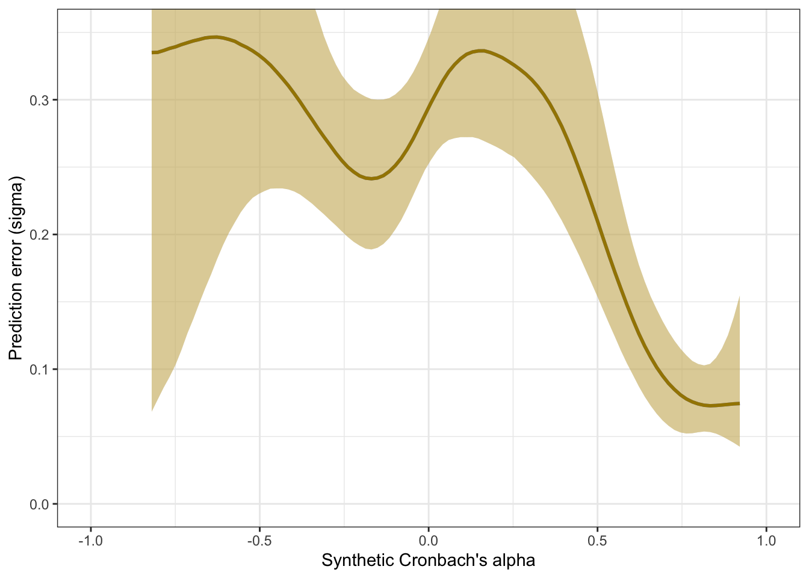
pred <- conditional_effects(m_lmsynth_rel_scales, method = "predict")
ggplot(scales, aes(synthetic_alpha, empirical_alpha,
color = str_detect(scale, "^random"),
ymin = empirical_alpha - empirical_alpha_se,
ymax = empirical_alpha + empirical_alpha_se)) +
geom_abline(linetype = "dashed") +
geom_point(alpha = 0.6, size = 1) +
geom_smooth(aes(
x = synthetic_alpha,
y = estimate__,
ymin = lower__,
ymax = upper__,
), stat = "identity",
color = "#a48500",
fill = "#EDC951",
data = as.data.frame(pred$synthetic_alpha)) +
scale_color_manual(values = c("#00A0B0", "#6A4A3C"),
guide = "none") +
xlab("Synthetic Cronbach's alpha") +
ylab("Empirical Cronbach's alpha") +
theme_bw() +
coord_fixed(xlim = c(-1, 1), ylim = c(-1,1)) -> plot_rels
plot_rels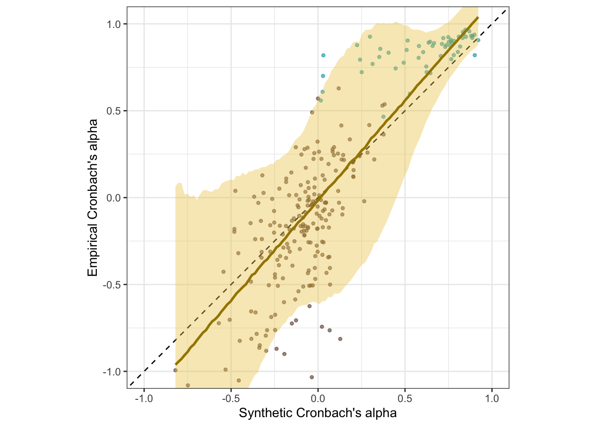
(scales %>%
filter(!str_detect(scale, "^random")) %>%
mutate(synthetic_alpha = round(synthetic_alpha, 2),
empirical_alpha = round(empirical_alpha, 2),
scale = str_replace_all(scale, "_+", " ")) %>%
ggplot(., aes(synthetic_alpha, empirical_alpha,
# ymin = empirical_r - empirical_r_se,
# ymax = empirical_r + empirical_r_se,
label = scale)) +
geom_abline(linetype = "dashed") +
geom_point(alpha = 0.3, size = 1, color = "#00A0B0") +
xlab("Synthetic Cronbach's alpha") +
ylab("Empirical Cronbach's alpha") +
theme_bw() +
theme(legend.position='none') +
coord_fixed(xlim = c(-1,1), ylim = c(-1,1))) %>%
ggplotly()scales %>%
filter(type != "random") %>%
mutate(empirical_alpha = sprintf("%.2f±%.3f", empirical_alpha,
empirical_alpha_se),
synthetic_alpha = sprintf("%.2f", synthetic_alpha),
scale = str_replace_all(scale, "_+", " ")
) %>%
select(scale, empirical_alpha, synthetic_alpha, number_of_items) %>%
DT::datatable(rownames = FALSE,
filter = "top")The SurveyBot3000 does not “know” whether scales were published in the literature or formed at random. Knowing what we do about the research literature in psychology, we can infer that published scales will usually exceed the Nunnally threshold of .70. Hence, we know that the synthetic alphas for published scales should rarely be below .70. If we regress synthetic alphas on empirical alphas separately for the scales taken from the literature, we see this as a bias (a positive regression intercept of .68 and a slope ≠ 1, .26). Still, the synthetic alpha estimates are predictive of empirical alphas with an accuracy of .65.
There is no clear bias for the random scales. When both are analyzed jointly, the clear selection bias for the published scales is mostly averaged out but is reflected in the slope exceeding 1.
scales %>%
group_by(type) %>%
summarise(broom::tidy(cor.test(synthetic_alpha, empirical_alpha)), sd_alpha = sd(empirical_alpha), n = n()) %>%
knitr::kable(digits = 2, caption = "Accuracy shown separately for randomly formed and real scales")| type | estimate | statistic | p.value | parameter | conf.low | conf.high | method | alternative | sd_alpha | n |
|---|---|---|---|---|---|---|---|---|---|---|
| random | 0.63 | 11.47 | 0 | 198 | 0.54 | 0.71 | Pearson’s product-moment correlation | two.sided | 0.37 | 200 |
| real | 0.64 | 6.11 | 0 | 55 | 0.45 | 0.77 | Pearson’s product-moment correlation | two.sided | 0.10 | 57 |
scales %>%
group_by(type) %>%
summarise(broom::tidy(lm(empirical_alpha ~ synthetic_alpha)), n = n()) %>%
knitr::kable(digits = 2, caption = "Regression intercepts and slopes for randomly formed and real scales")| type | term | estimate | std.error | statistic | p.value | n |
|---|---|---|---|---|---|---|
| random | (Intercept) | -0.08 | 0.02 | -3.44 | 0 | 200 |
| random | synthetic_alpha | 1.15 | 0.10 | 11.47 | 0 | 200 |
| real | (Intercept) | 0.68 | 0.03 | 23.76 | 0 | 57 |
| real | synthetic_alpha | 0.26 | 0.04 | 6.11 | 0 | 57 |
Here are the results if we calculate the accuracy and prediction error as in the Stage 1 submission. We now think this approach, by conditioning on random variation in the empirical correlations, gave a misleading picture of the accuracy and bias of the synthetic Cronbach’s alphas. Here we report the results if we conduct the analysis as in Stage 1 (but with the corrected SE of empirical alphas).
s1_scales <- scales %>%
filter(number_of_items > 2) %>%
rowwise() %>%
mutate(reverse_items = if_else(type == "random", list(reverse_items_by_1st), list(reverse_items)),
r_real_rev = list(reverse_items(r_real, reverse_items)),
pt_r_llm_rev = list(reverse_items(pt_r_llm, reverse_items)),
r_llm_rev = list(reverse_items(r_llm, reverse_items))) %>%
mutate(
rel_real = list(psych::alpha(r_real_rev, keys = F, n.obs = N)$feldt),
rel_llm = list(psych::alpha(r_llm_rev, keys = F, n.obs = N)$feldt),
rel_pt_llm = list(psych::alpha(pt_r_llm_rev, keys = F, n.obs = N)$feldt)) %>%
mutate(empirical_alpha = rel_real$alpha$raw_alpha,
synthetic_alpha = rel_llm$alpha$raw_alpha,
pt_synthetic_alpha = rel_pt_llm$alpha$raw_alpha) %>%
mutate(
empirical_alpha_se = mean(diff(unlist(psychometric::alpha.CI(empirical_alpha, k = number_of_items, N = N, level = 0.95))))/1.96) %>%
filter(empirical_alpha > 0)
s1_r <- broom::tidy(cor.test(s1_scales$empirical_alpha, s1_scales$synthetic_alpha))m_lmsynth_rel_scales_s1 <- brm(
bf(empirical_alpha | mi(empirical_alpha_se) ~ synthetic_alpha,
sigma ~ poly(synthetic_alpha, degree = 3)), data = s1_scales,
iter = 6000, control = list(adapt_delta = 0.9),
file = "ignore/m_synth_rr_rel_lm_as_stage_1")
pred <- conditional_effects(m_lmsynth_rel_scales_s1, method = "predict")
ggplot(s1_scales, aes(synthetic_alpha, empirical_alpha,
color = str_detect(scale, "^random"),
ymin = empirical_alpha - empirical_alpha_se,
ymax = empirical_alpha + empirical_alpha_se)) +
geom_abline(linetype = "dashed") +
geom_point(alpha = 0.6, size = 1) +
geom_smooth(aes(
x = synthetic_alpha,
y = estimate__,
ymin = lower__,
ymax = upper__,
), stat = "identity",
color = "#a48500",
fill = "#EDC951",
data = as.data.frame(pred$synthetic_alpha)) + scale_color_manual(values = c("#00A0B0", "#6A4A3C"),
guide = "none") +
xlab("Synthetic Cronbach's alpha") +
ylab("Empirical Cronbach's alpha") +
theme_bw() +
coord_fixed(xlim = c(-1, 1), ylim = c(-1,1)) -> s1_plot_rels
newdata <- m_lmsynth_rel_scales_s1$data %>% select(empirical_alpha, synthetic_alpha, empirical_alpha_se)
epreds <- epred_draws(newdata = newdata, obj = m_lmsynth_rel_scales_s1, re_formula = NA)
preds <- predicted_draws(newdata = newdata, obj = m_lmsynth_rel_scales_s1, re_formula = NA)
epred_preds <- epreds %>% left_join(preds)
by_draw <- epred_preds %>% group_by(.draw) %>%
summarise(
mae = mean(abs(.epred - .prediction)),
.epred = var(.epred),
.prediction = var(.prediction),
sigma = sqrt(.prediction - .epred),
latent_r = sqrt(.epred/.prediction))
accuracy_bayes_rels_poly <- by_draw %>% mean_hdci(latent_r)
s1_plot_rels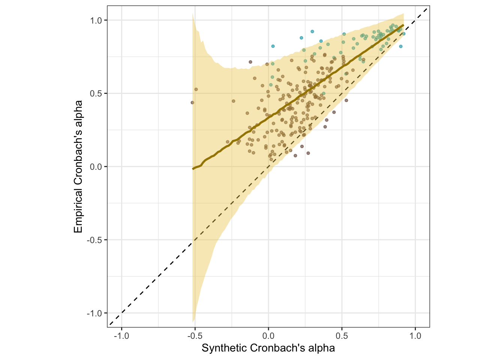
bind_rows(
r %>%
mutate(model = "fine-tuned", kind = "manifest") %>%
select(model, kind, accuracy = estimate, conf.low, conf.high),
s1_r %>%
mutate(model = "fine-tuned, conditioned on empirical r", kind = "manifest") %>%
select(model, kind, accuracy = estimate, conf.low, conf.high),
accuracy_bayes_rels %>%
mutate(model = "fine-tuned", kind = "latent outcome (Bayesian EIV)") %>%
select(model, kind, accuracy = latent_r, conf.low = .lower, conf.high = .upper),
accuracy_bayes_rels_poly %>%
mutate(model = "fine-tuned, conditioned on empirical r", kind = "latent outcome (Bayesian EIV)") %>%
select(model, kind, accuracy = latent_r, conf.low = .lower, conf.high = .upper),
) %>%
knitr::kable(digits = 2, caption = "Accuracy of synthetic alphas when empirical alphas are biased upward through adaptive item reversion and selection on positive alphas")| model | kind | accuracy | conf.low | conf.high |
|---|---|---|---|---|
| fine-tuned | manifest | 0.85 | 0.81 | 0.88 |
| fine-tuned, conditioned on empirical r | manifest | 0.74 | 0.68 | 0.80 |
| fine-tuned | latent outcome (Bayesian EIV) | 0.84 | 0.79 | 0.90 |
| fine-tuned, conditioned on empirical r | latent outcome (Bayesian EIV) | 0.77 | 0.69 | 0.85 |
Although the number of items alone can of course predict Cronbach’s alpha, the synthetic alphas explain much more variance in empirical alphas.
scales %>%
ungroup() %>%
summarise(broom::tidy(cor.test(number_of_items, empirical_alpha)), sd_alpha = sd(empirical_alpha), n = n()) %>%
knitr::kable(digits = 2)| estimate | statistic | p.value | parameter | conf.low | conf.high | method | alternative | sd_alpha | n |
|---|---|---|---|---|---|---|---|---|---|
| 0.04 | 0.67 | 0.5 | 255 | -0.08 | 0.16 | Pearson’s product-moment correlation | two.sided | 0.54 | 257 |
##
## Call:
## lm(formula = empirical_alpha ~ number_of_items, data = scales)
##
## Residuals:
## Min 1Q Median 3Q Max
## -1.4908 -0.3462 -0.0713 0.3084 0.9129
##
## Coefficients:
## Estimate Std. Error t value Pr(>|t|)
## (Intercept) -0.015196 0.080899 -0.188 0.851
## number_of_items 0.008388 0.012503 0.671 0.503
##
## Residual standard error: 0.5448 on 255 degrees of freedom
## Multiple R-squared: 0.001762, Adjusted R-squared: -0.002153
## F-statistic: 0.45 on 1 and 255 DF, p-value: 0.5029##
## Call:
## lm(formula = empirical_alpha ~ number_of_items + synthetic_alpha,
## data = scales)
##
## Residuals:
## Min 1Q Median 3Q Max
## -0.94552 -0.14535 -0.01649 0.15466 0.81161
##
## Coefficients:
## Estimate Std. Error t value Pr(>|t|)
## (Intercept) -0.024067 0.043008 -0.560 0.576
## number_of_items -0.002373 0.006660 -0.356 0.722
## synthetic_alpha 1.256941 0.049366 25.462 <2e-16 ***
## ---
## Signif. codes: 0 '***' 0.001 '**' 0.01 '*' 0.05 '.' 0.1 ' ' 1
##
## Residual standard error: 0.2896 on 254 degrees of freedom
## Multiple R-squared: 0.719, Adjusted R-squared: 0.7168
## F-statistic: 324.9 on 2 and 254 DF, p-value: < 2.2e-16scales %>% ungroup() %>%
summarise(mean(empirical_alpha), sd(empirical_alpha)) %>%
kable(digits = 2, caption = "Accuracy across all scales")| mean(empirical_alpha) | sd(empirical_alpha) |
|---|---|
| 0.03 | 0.54 |
scales %>% group_by(type) %>%
summarise(mean_alpha = mean(empirical_alpha),
sd_alpha = sd(empirical_alpha),
broom::tidy(cor.test(synthetic_alpha, empirical_alpha)),
n = n()) %>%
kable(digits = 2, caption = "Accuracy separated by random/real")| type | mean_alpha | sd_alpha | estimate | statistic | p.value | parameter | conf.low | conf.high | method | alternative | n |
|---|---|---|---|---|---|---|---|---|---|---|---|
| random | -0.20 | 0.37 | 0.63 | 11.47 | 0 | 198 | 0.54 | 0.71 | Pearson’s product-moment correlation | two.sided | 200 |
| real | 0.84 | 0.10 | 0.64 | 6.11 | 0 | 55 | 0.45 | 0.77 | Pearson’s product-moment correlation | two.sided | 57 |
psychometric::cRRr(0.647, 0.102, 0.514) %>%
kable(digits = 2, caption = "Accuracy for real scales disattenuated for variance restriction")| unrestricted |
|---|
| 0.97 |
Is the accuracy lower for the pre-trained model?
ggplot(scales, aes(pt_synthetic_alpha, empirical_alpha,
color = str_detect(scale, "^random"),
ymin = empirical_alpha - empirical_alpha_se,
ymax = empirical_alpha + empirical_alpha_se)) +
geom_abline(linetype = "dashed") +
geom_point(alpha = 0.6, size = 1) +
scale_color_manual(values = c("#00A0B0", "#6A4A3C"),
guide = "none") +
xlab("Synthetic Cronbach's alpha") +
ylab("Empirical Cronbach's alpha") +
theme_bw() +
coord_fixed(xlim = c(-1,1), ylim = c(-1,1)) -> pt_plot_rels
pt_plot_rels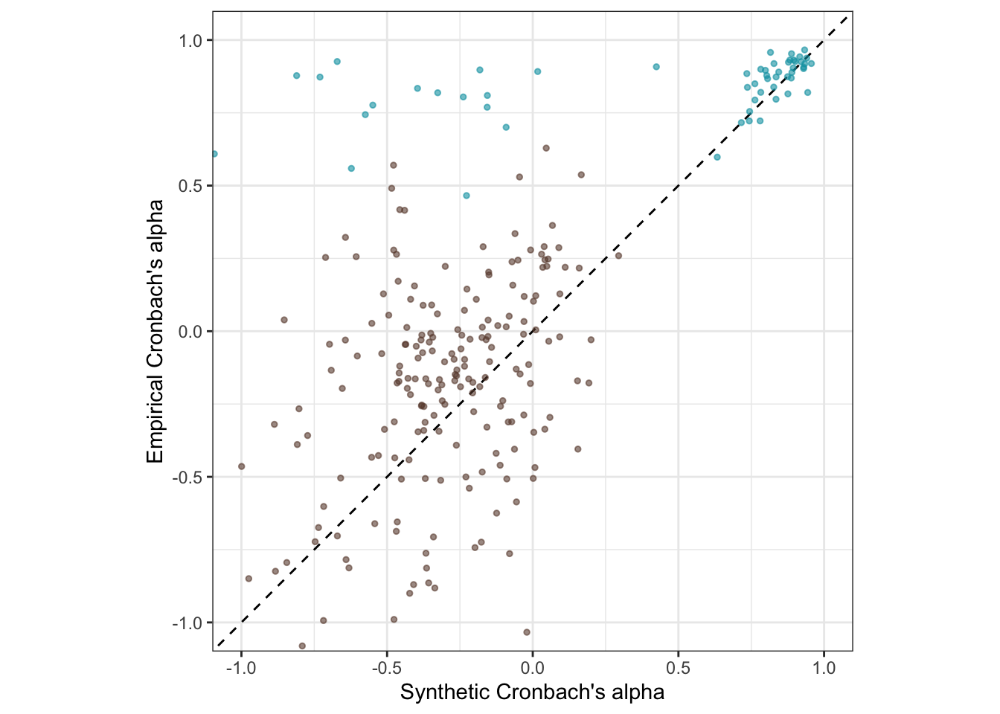
manifest_scores = arrow::read_feather(file = file.path(data_path, glue("{model_name}.raw.validation-study-2024-11-01.scale_correlations.feather")))
pt_manifest_scores = arrow::read_feather(file = file.path(data_path, glue("{pretrained_model_name}.raw.validation-study-2024-11-01.scale_correlations.feather")))
manifest_scores <- manifest_scores %>%
left_join(real_scales, by = c("scale_a" = "scale")) %>%
left_join(real_scales, by = c("scale_b" = "scale")) %>%
left_join(pt_manifest_scores %>% select(scale_a, scale_b, pt_synthetic_r = synthetic_r), by = c("scale_a", "scale_b"))
pt_manifest_scores <- pt_manifest_scores %>%
left_join(real_scales, by = c("scale_a" = "scale")) %>%
left_join(real_scales, by = c("scale_b" = "scale"))
manifest_scores_all <- manifest_scores
pt_manifest_scores_all <- pt_manifest_scores
manifest_scores <- manifest_scores %>% filter(number_of_items.x >= 3, number_of_items.y >= 3)
pt_manifest_scores <- pt_manifest_scores %>% filter(number_of_items.x >= 3, number_of_items.y >= 3)r <- broom::tidy(cor.test(manifest_scores$empirical_r, manifest_scores$synthetic_r))
pt_r <- broom::tidy(cor.test(pt_manifest_scores$empirical_r, pt_manifest_scores$synthetic_r))
se2 <- mean(manifest_scores$empirical_r_se^2)
model <- paste0('
# Latent variables
PearsonLatent =~ 1*empirical_r
# Fixing error variances based on known standard errors
empirical_r ~~ ',se2,'*empirical_r
# Relationship between latent variables
PearsonLatent ~~ synthetic_r
')
fit <- sem(model, data = manifest_scores)
pt_fit <- sem(model, data = pt_manifest_scores)
pt_m_lmsynth_r_scales <- brm(
bf(empirical_r | mi(empirical_r_se) ~ synthetic_r + (1|mm(scale_a, scale_b)),
sigma ~ s(synthetic_r)), data = pt_manifest_scores,
file = "ignore/pt_m_synth_rr_r_scales_lm8")
newdata <- pt_m_lmsynth_r_scales$data %>% select(empirical_r, synthetic_r, empirical_r_se)
epreds <- epred_draws(newdata = newdata, obj = pt_m_lmsynth_r_scales, re_formula = NA)
preds <- predicted_draws(newdata = newdata, obj = pt_m_lmsynth_r_scales, re_formula = NA)
epred_preds <- epreds %>% left_join(preds)
by_draw <- epred_preds %>% group_by(.draw) %>%
summarise(.epred = var(.epred),
.prediction = var(.prediction),
sigma = sqrt(.prediction - .epred),
latent_r = sqrt(.epred/.prediction))
pt_accuracy_bayes_scales <- by_draw %>% mean_hdci(latent_r)
m_lmsynth_r_scales <- brm(
bf(empirical_r | mi(empirical_r_se) ~ synthetic_r + (1|mm(scale_a, scale_b)),
sigma ~ s(synthetic_r)), data = manifest_scores,
file = "ignore/m_synth_rr_r_scales_lm8")
sd_synth <- sd(m_lmsynth_r_scales$data$synthetic_r)
newdata <- m_lmsynth_r_scales$data %>% select(empirical_r, synthetic_r, empirical_r_se)
epreds <- epred_draws(newdata = newdata, obj = m_lmsynth_r_scales, re_formula = NA)
preds <- predicted_draws(newdata = newdata, obj = m_lmsynth_r_scales, re_formula = NA)
epred_preds <- epreds %>% left_join(preds)
by_draw <- epred_preds %>% group_by(.draw) %>%
summarise(
mae = mean(abs(.epred - .prediction)),
.epred = var(.epred),
.prediction = var(.prediction),
sigma = sqrt(.prediction - .epred),
latent_r = sqrt(.epred/.prediction))
accuracy_bayes_scales <- by_draw %>% mean_hdci(latent_r)
bind_rows(
pt_r %>%
mutate(model = "pre-trained", kind = "manifest") %>%
select(model, kind, accuracy = estimate, conf.low, conf.high),
standardizedsolution(pt_fit) %>%
filter(lhs == "PearsonLatent", rhs == "synthetic_r") %>%
mutate(model = "pre-trained", kind = "latent outcome (SEM)") %>%
select(model, kind, accuracy = est.std,
conf.low = ci.lower, conf.high = ci.upper),
pt_accuracy_bayes_scales %>%
mutate(model = "pre-trained", kind = "latent outcome (Bayesian EIV)") %>%
select(model, kind, accuracy = latent_r, conf.low = .lower, conf.high = .upper),
r %>%
mutate(model = "fine-tuned", kind = "manifest") %>%
select(model, kind, accuracy = estimate, conf.low, conf.high),
standardizedsolution(fit) %>%
filter(lhs == "PearsonLatent", rhs == "synthetic_r") %>%
mutate(model = "fine-tuned", kind = "latent outcome (SEM)") %>%
select(model, kind, accuracy = est.std,
conf.low = ci.lower, conf.high = ci.upper),
accuracy_bayes_scales %>%
mutate(model = "fine-tuned", kind = "latent outcome (Bayesian EIV)") %>%
select(model, kind, accuracy = latent_r, conf.low = .lower, conf.high = .upper)
) %>%
kable(digits = 2, caption = str_c("Accuracy for k=",nrow(manifest_scores)," scale pairs (",n_distinct(c(manifest_scores$scale_a, manifest_scores$scale_b))," scales) across language models and methods"))| model | kind | accuracy | conf.low | conf.high |
|---|---|---|---|---|
| pre-trained | manifest | 0.50 | 0.46 | 0.54 |
| pre-trained | latent outcome (SEM) | 0.51 | 0.47 | 0.55 |
| pre-trained | latent outcome (Bayesian EIV) | 0.61 | 0.56 | 0.66 |
| fine-tuned | manifest | 0.83 | 0.81 | 0.85 |
| fine-tuned | latent outcome (SEM) | 0.84 | 0.83 | 0.86 |
| fine-tuned | latent outcome (Bayesian EIV) | 0.84 | 0.82 | 0.87 |
## Family: gaussian
## Links: mu = identity; sigma = log
## Formula: empirical_r | mi(empirical_r_se) ~ synthetic_r + (1 | mm(scale_a, scale_b))
## sigma ~ s(synthetic_r)
## Data: manifest_scores (Number of observations: 1568)
## Draws: 4 chains, each with iter = 2000; warmup = 1000; thin = 1;
## total post-warmup draws = 4000
##
## Smooth Terms:
## Estimate Est.Error l-95% CI u-95% CI Rhat Bulk_ESS Tail_ESS
## sds(sigma_ssynthetic_r_1) 1.15 0.66 0.17 2.67 1.00 795 1059
##
## Group-Level Effects:
## ~mmscale_ascale_b (Number of levels: 57)
## Estimate Est.Error l-95% CI u-95% CI Rhat Bulk_ESS Tail_ESS
## sd(Intercept) 0.06 0.01 0.04 0.08 1.00 1294 1706
##
## Population-Level Effects:
## Estimate Est.Error l-95% CI u-95% CI Rhat Bulk_ESS Tail_ESS
## Intercept -0.00 0.01 -0.02 0.02 1.00 1297 2114
## sigma_Intercept -1.86 0.02 -1.90 -1.82 1.00 3551 2614
## synthetic_r 1.20 0.02 1.16 1.24 1.00 3469 2920
## sigma_ssynthetic_r_1 -1.30 2.28 -6.44 2.16 1.00 989 993
##
## Draws were sampled using sample(hmc). For each parameter, Bulk_ESS
## and Tail_ESS are effective sample size measures, and Rhat is the potential
## scale reduction factor on split chains (at convergence, Rhat = 1).kable(rmse_scales <- by_draw %>% mean_hdci(sigma), caption = "Average prediction error (RMSE)", digits = 2)| sigma | .lower | .upper | .width | .point | .interval |
|---|---|---|---|---|---|
| 0.16 | 0.14 | 0.17 | 0.95 | mean | hdci |
kable(mae_scales <- by_draw %>% mean_hdci(mae), caption = "Average prediction error (MAE)", digits = 2)| mae | .lower | .upper | .width | .point | .interval |
|---|---|---|---|---|---|
| 0.13 | 0.12 | 0.13 | 0.95 | mean | hdci |
plot_prediction_error_scales <- plot(conditional_effects(m_lmsynth_r_scales, dpar = "sigma"), plot = F)[[1]] +
theme_bw() +
geom_smooth(stat = "identity", color = "#a48500", fill = "#EDC951") +
xlab("Synthetic inter-scale correlation") +
ylab("Prediction error (sigma)")
plot_prediction_error_scales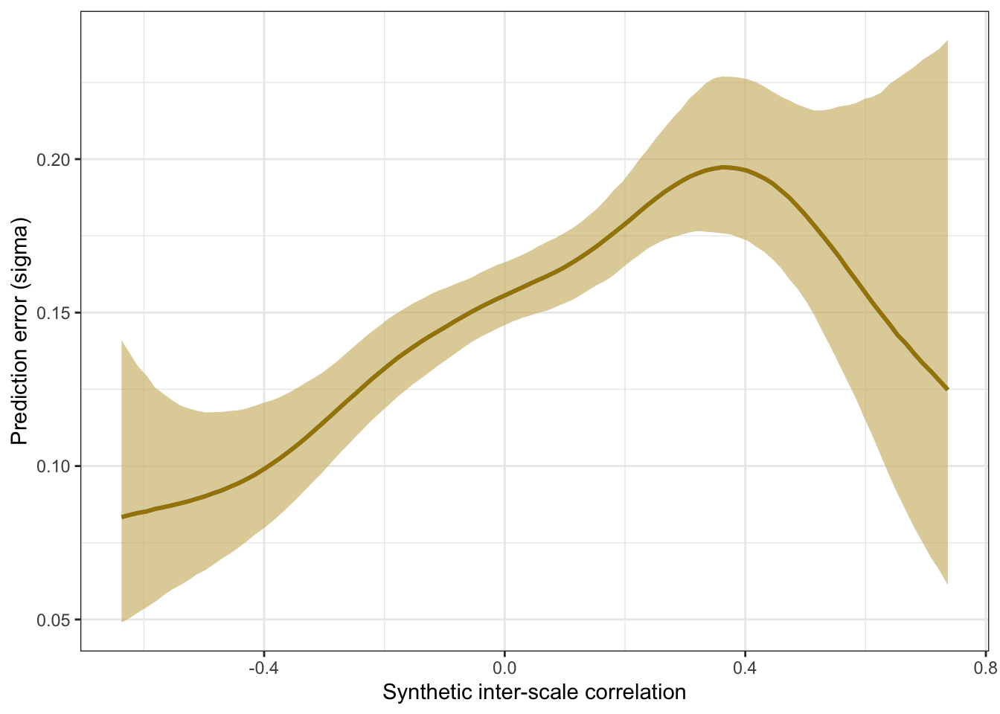
pred <- conditional_effects(m_lmsynth_r_scales, method = "predict")
ggplot(manifest_scores, aes(synthetic_r, empirical_r,
ymin = empirical_r - empirical_r_se,
ymax = empirical_r + empirical_r_se)) +
geom_abline(linetype = "dashed") +
geom_point(color = "#00A0B0", alpha = 0.1, size = 1) +
geom_smooth(aes(
x = synthetic_r,
y = estimate__,
ymin = lower__,
ymax = upper__,
), stat = "identity",
color = "#a48500",
fill = "#EDC951",
data = as.data.frame(pred$synthetic_r)) +
xlab("Synthetic inter-scale correlation") +
ylab("Empirical inter-scale correlation") +
theme_bw() +
coord_fixed(xlim = c(-1,1), ylim = c(-1,1)) -> plot_scales
plot_scales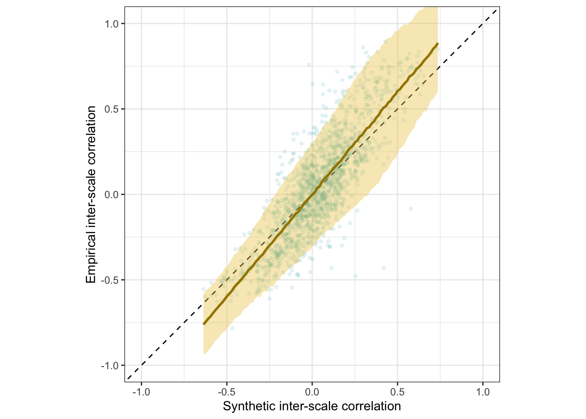
(manifest_scores %>%
mutate(synthetic_r = round(synthetic_r, 2),
empirical_r = round(empirical_r, 2),
scales = str_replace_all(str_c(scale_a, "\n", scale_b),
"_+", " ")) %>%
ggplot(., aes(synthetic_r, empirical_r,
# ymin = empirical_r - empirical_r_se,
# ymax = empirical_r + empirical_r_se,
label = scales)) +
geom_abline(linetype = "dashed") +
geom_point(color = "#00A0B0", alpha = 0.3, size = 1) +
xlab("Synthetic inter-scale correlation") +
ylab("Empirical inter-scale correlation") +
theme_bw() +
coord_fixed(xlim = c(-1,1), ylim = c(-1,1))) %>%
ggplotly()manifest_scores %>%
mutate(empirical_r = sprintf("%.2f±%.3f", empirical_r,
empirical_r_se),
synthetic_r = sprintf("%.2f", synthetic_r),
scale_a = str_replace_all(scale_a, "_+", " "),
scale_b = str_replace_all(scale_b, "_+", " ")
) %>%
select(scale_a, scale_b, empirical_r, synthetic_r) %>%
DT::datatable(rownames = FALSE,
filter = "top")# For scale correlations
m_lmsynth_r_scales_poly <- brm(
bf(empirical_r | mi(empirical_r_se) ~ synthetic_r + (1|mm(scale_a, scale_b)),
sigma ~ poly(synthetic_r, degree = 3)), data = manifest_scores,
file = "ignore/m_synth_rr_r_scales_lm_poly")
newdata <- m_lmsynth_r_scales_poly$data %>% select(empirical_r, synthetic_r, empirical_r_se)
epreds <- epred_draws(newdata = newdata, obj = m_lmsynth_r_scales_poly, re_formula = NA)
preds <- predicted_draws(newdata = newdata, obj = m_lmsynth_r_scales_poly, re_formula = NA)
epred_preds <- epreds %>% left_join(preds)
by_draw <- epred_preds %>% group_by(.draw) %>%
summarise(.epred = var(.epred),
.prediction = var(.prediction),
sigma = sqrt(.prediction - .epred),
latent_r = sqrt(.epred/.prediction))
accuracy_bayes_scales_poly <- by_draw %>% mean_hdci(latent_r)
bind_rows(
accuracy_bayes_scales %>%
mutate(model = "spline", kind = "latent outcome (Bayesian EIV)") %>%
select(model, kind, accuracy = latent_r, conf.low = .lower, conf.high = .upper),
accuracy_bayes_scales_poly %>%
mutate(model = "polynomial", kind = "latent outcome (Bayesian EIV)") %>%
select(model, kind, accuracy = latent_r, conf.low = .lower, conf.high = .upper)
) %>%
knitr::kable(digits = 2, caption = "Comparing spline and polynomial models for scale correlations")| model | kind | accuracy | conf.low | conf.high |
|---|---|---|---|---|
| spline | latent outcome (Bayesian EIV) | 0.84 | 0.82 | 0.87 |
| polynomial | latent outcome (Bayesian EIV) | 0.85 | 0.82 | 0.87 |
plot_prediction_error_scales_poly <- plot(conditional_effects(m_lmsynth_r_scales_poly, dpar = "sigma"), plot = F)[[1]] +
theme_bw() +
geom_smooth(stat = "identity", color = "#a48500", fill = "#EDC951") +
xlab("Synthetic inter-scale correlation") +
ylab("Prediction error (sigma)")
plot_prediction_error_scales_poly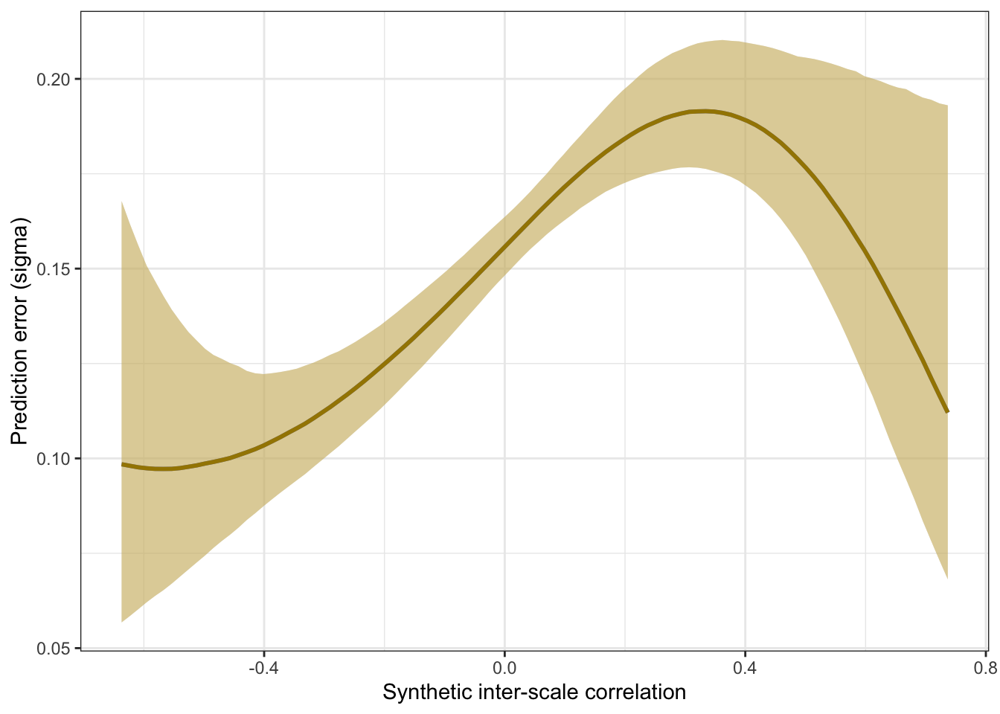
by_item_number <- manifest_scores_all %>%
mutate(items = number_of_items.x + number_of_items.y) %>%
group_by(items) %>%
filter(n() > 10) %>%
summarise(broom::tidy(cor.test(empirical_r, synthetic_r)), pt_cor = cor(empirical_r, pt_synthetic_r), pairwise_n = n())
by_item_number %>%
ggplot(aes(items, estimate, ymin = conf.low, ymax = conf.high)) +
geom_pointrange() +
scale_y_continuous("Manifest accuracy (with 95% confidence interval)") +
xlab("Number of items summed across scales")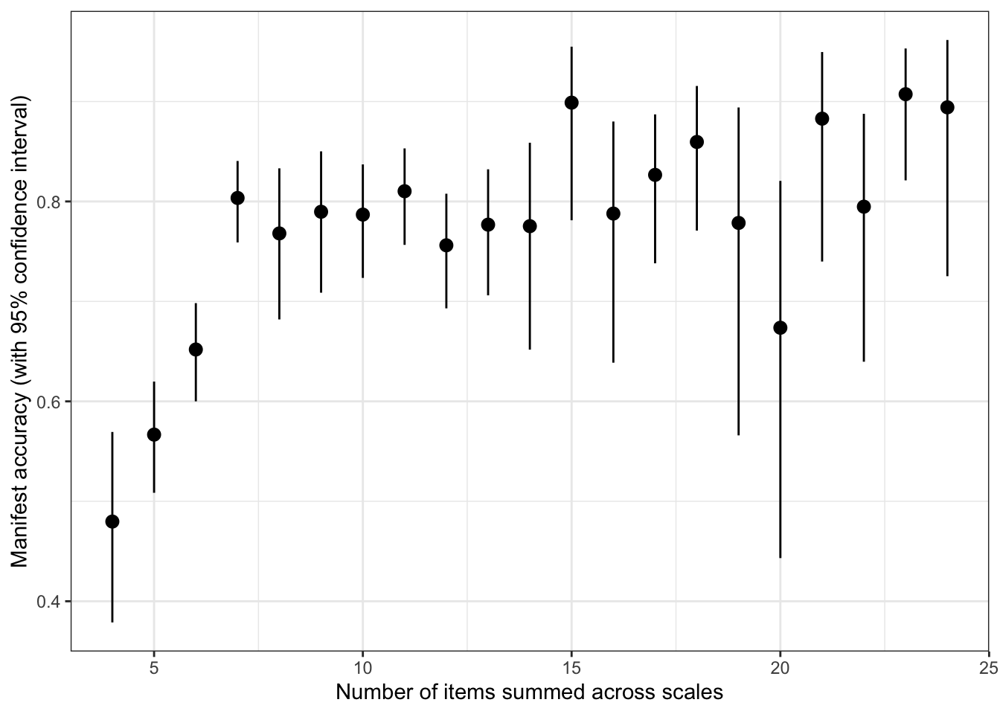
real_scales %>% ungroup() %>%
filter(number_of_items >= 3) %>%
summarise(median(number_of_items),
mean(number_of_items))## # A tibble: 1 × 2
## `median(number_of_items)` `mean(number_of_items)`
## <int> <dbl>
## 1 4 5.75r_2item <- broom::tidy(cor.test(manifest_scores_all$empirical_r, manifest_scores_all$synthetic_r))
pt_r_2item <- broom::tidy(cor.test(pt_manifest_scores_all$empirical_r, pt_manifest_scores_all$synthetic_r))
bind_rows(
pt_r %>%
mutate(model = "pre-trained", kind = "manifest") %>%
select(model, kind, accuracy = estimate, conf.low, conf.high) %>%
mutate(items = ">= 3"),
r %>%
mutate(model = "fine-tuned", kind = "manifest") %>%
select(model, kind, accuracy = estimate, conf.low, conf.high) %>%
mutate(items = ">= 3"),
pt_r_2item %>%
mutate(model = "pre-trained", kind = "manifest") %>%
select(model, kind, accuracy = estimate, conf.low, conf.high) %>%
mutate(items = ">= 2"),
r_2item %>%
mutate(model = "fine-tuned", kind = "manifest") %>%
select(model, kind, accuracy = estimate, conf.low, conf.high) %>%
mutate(items = ">= 2"),
) %>%
kable(digits = 2, caption = "Accuracy across language models and methods")| model | kind | accuracy | conf.low | conf.high | items |
|---|---|---|---|---|---|
| pre-trained | manifest | 0.50 | 0.46 | 0.54 | >= 3 |
| fine-tuned | manifest | 0.83 | 0.81 | 0.85 | >= 3 |
| pre-trained | manifest | 0.47 | 0.44 | 0.49 | >= 2 |
| fine-tuned | manifest | 0.75 | 0.73 | 0.76 | >= 2 |
broom::tidy(lm(estimate ~ items, by_item_number, weights = 1/(by_item_number$conf.high-by_item_number$conf.low))) %>%
kable(digits = 2, caption = "Accuracy increase with number of items")| term | estimate | std.error | statistic | p.value |
|---|---|---|---|---|
| (Intercept) | 0.62 | 0.04 | 15.62 | 0 |
| items | 0.01 | 0.00 | 4.29 | 0 |
manifest_scores %>%
filter(number_of_items.x >= 5, number_of_items.y >= 5) %>%
summarise(cor = cor(empirical_r, synthetic_r), n()) %>%
kable(digits = 2, caption = "Accuracy when both scales have at least 5 items")| cor | n() |
|---|---|
| 0.88 | 228 |
manifest_scores %>%
filter(number_of_items.x >= 10, number_of_items.y >= 10) %>%
summarise(cor = cor(empirical_r, synthetic_r), n()) %>%
kable(digits = 2, caption = "Accuracy when both scales have at least 10 items")| cor | n() |
|---|---|
| 0.87 | 36 |
Is the accuracy lower for the pre-trained model?
ggplot(pt_manifest_scores, aes(synthetic_r, empirical_r,
ymin = empirical_r - empirical_r_se,
ymax = empirical_r + empirical_r_se)) +
geom_abline(linetype = "dashed") +
geom_point(color = "#00A0B0", alpha = 0.1, size = 1) +
xlab("Synthetic inter-scale correlation") +
ylab("Empirical inter-scale correlation") +
theme_bw() +
coord_fixed(xlim = c(-1,1), ylim = c(-1,1)) -> pt_plot_scales
pt_plot_scales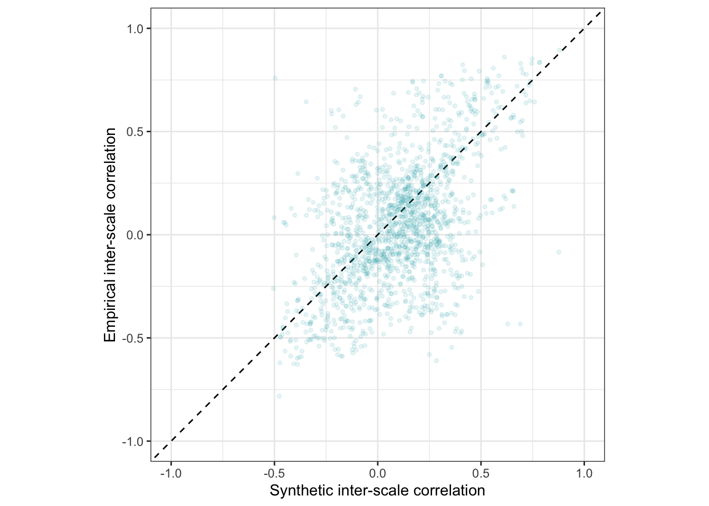
library(patchwork)
pt_plot_items2 <- pt_plot_items +
annotate("text", size = 3, x = -1, y = 0.98, vjust = 0, hjust = 0, label = with(pt_accuracy_bayes_items, { sprintf("accuracy = %.2f [%.2f;%.2f]", latent_r, .lower, .upper) })) +
annotate("text", size = 2.5, x = -.1, y = 0.5, vjust = 1, hjust = 1, label = "r(CESD_10,19)", color = "#00A0B0") +
annotate("segment", x = -.1, y = 0.5, xend = 0.4185763, yend = 0.5875796, color = "#00A0B0", alpha = 0.7) +
annotate("text", size = 2.5, x = 0, y = -0.9, hjust = 0.5, label = "r(RAAS_02,05)", color = "#00A0B0") +
annotate("segment", x = 0, y = -0.83, xend = 0.5842606, yend = -0.7020895, color = "#00A0B0", alpha = 0.7)
plot_items2 <- plot_items +
annotate("text", size = 3, x = -1, y = 0.98, vjust = 0, hjust = 0, label = with(accuracy_bayes_items, { sprintf("accuracy = %.2f [%.2f;%.2f]", latent_r, .lower, .upper) })) +
annotate("text", size = 2.5, x = -.1, y = 0.5, vjust = 1, hjust = 1, label = "r(CESD_10,19)", color = "#00A0B0") +
annotate("segment", x = -.1, y = 0.5, xend = 0.5369071, yend = 0.5875796, color = "#00A0B0", alpha = 0.7) +
annotate("text", size = 2.5, x = 0, y = -0.9, hjust = 0.5, label = "r(RAAS_02,05)", color = "#00A0B0") +
annotate("segment", x = 0, y = -0.83, xend = 0.09218573, yend = -0.7020895, color = "#00A0B0", alpha = 0.7)
pt_plot_rels2 <- pt_plot_rels +
annotate("text", size = 3, x = -1, y = .98, vjust = 0, hjust = 0, label = with(pt_accuracy_bayes_rels, { sprintf("accuracy = %.2f [%.2f;%.2f]", latent_r, .lower, .upper) })) +
annotate("text", size = 2.5, x = 0.68, y = 0, hjust = 0.5, label = "Fear of COVID", color = "#00A0B0") +
annotate("segment", x = 0.68, y = 0.05, xend = 0.9563192, yend = 0.9262542, color = "#00A0B0", alpha = 0.7) +
annotate("text", size = 2.5, x = -1, y = 0.5, hjust = 0, label = "HEXACO fairness", color = "#00A0B0") +
annotate("segment", x = -0.65, y = 0.55, xend = -0.3262759, yend = 0.8217475, color = "#00A0B0", alpha = 0.7)
get_scale_point <- function(data, synthetic_approx, empirical_approx) {
data %>%
ungroup() %>%
# Find closest point to target coordinates
mutate(dist = sqrt((synthetic_alpha - synthetic_approx)^2 +
(empirical_alpha - empirical_approx)^2)) %>%
arrange(dist) %>%
slice(1) %>%
select(synthetic_alpha, empirical_alpha)
}
p1 <- get_scale_point(scales, 0.30, 0.22)
p2 <- get_scale_point(scales, 0.12, -0.36)
p3 <- get_scale_point(scales, -0.4, -0.90)
plot_rels2 <- plot_rels +
annotate("text", size = 3, x = -1, y = .98, vjust = 0, hjust = 0, label = with(accuracy_bayes_rels, { sprintf("accuracy = %.2f [%.2f;%.2f]", latent_r, .lower, .upper) })) +
annotate("text", size = 2.5, x = -0.2, y = -0.9, hjust = 0, label = "randomly formed scales", color = "#6A4A3C") +
annotate("segment", x = 0.4, y = -0.85, xend = p1$synthetic_alpha, yend = p1$empirical_alpha, color = "#6A4A3C", alpha = 0.7) +
annotate("segment", x = 0.4, y = -0.85, xend = p2$synthetic_alpha, yend = p2$empirical_alpha, color = "#6A4A3C", alpha = 0.7) +
annotate("segment", x = 0.4, y = -0.85, xend = p3$synthetic_alpha, yend = p3$empirical_alpha, color = "#6A4A3C", alpha = 0.7) +
annotate("text", size = 2.5, x = 0.68, y = 0, hjust = 0.5, label = "Fear of COVID", color = "#00A0B0") +
annotate("segment", x = 0.68, y = 0.05, xend = 0.8864024, yend = 0.9262542, color = "#00A0B0", alpha = 0.7) +
annotate("text", size = 2.5, x = -1, y = 0.5, hjust = 0,label = "HEXACO fairness", color = "#00A0B0") +
annotate("segment", x = -0.65, y = 0.55, xend = 0.0305553, yend = 0.8217475, color = "#00A0B0", alpha = 0.7)
pt_plot_scales2 <- pt_plot_scales +
annotate("text", size = 3, x = -1, y = 0.98, vjust = 0, hjust = 0, label = with(pt_accuracy_bayes_scales, { sprintf("accuracy = %.2f [%.2f;%.2f]", latent_r, .lower, .upper) })) +
annotate("text", size = 2.5, x = -0.4, y = 0.5, hjust = 1, label = "r(UWES vigor,\nWGS)", color = "#00A0B0") +
annotate("segment", x = -.38, y = 0.45, xend = 0.6586402, yend = 0.5683167, color = "#00A0B0", alpha = 0.7) +
annotate("text", size = 2.5, x = -.1, y = -0.9, hjust = 0.5, label = "r(CES-D well-being,\nCES-D depressive affect)", color = "#00A0B0") +
annotate("segment", x = -0.2, y = -.75, xend = 0.4963392, yend = -0.7583637, color = "#00A0B0", alpha = 0.7)
plot_scales2 <- plot_scales +
annotate("text", size = 3, x = -1, y = 0.98, vjust = 0, hjust = 0, label = with(accuracy_bayes_scales, { sprintf("accuracy = %.2f [%.2f;%.2f]", latent_r, .lower, .upper) })) +
annotate("text", size = 2.5, x = -0.4, y = 0.5, hjust = 1, label = "r(UWES vigor,\nWGS)", color = "#00A0B0") +
annotate("segment", x = -.38, y = 0.45, xend = .55, yend = 0.5683167, color = "#00A0B0", alpha = 0.7) +
annotate("text", size = 2.5, x = -.1, y = -0.9, hjust = 0.5, label = "r(CES-D well-being,\nCES-D depressive affect)", color = "#00A0B0") +
annotate("segment", x = -0.2, y = -.75, xend = 0.02, yend = -0.7583637, color = "#00A0B0", alpha = 0.7)
(pt_plot_items2 + ggtitle("Pre-trained model before domain adaptation and fine-tuning") +
pt_plot_rels2 +
pt_plot_scales2) /
(plot_items2 + ggtitle("SurveyBot 3000") +
plot_rels2 +
plot_scales2)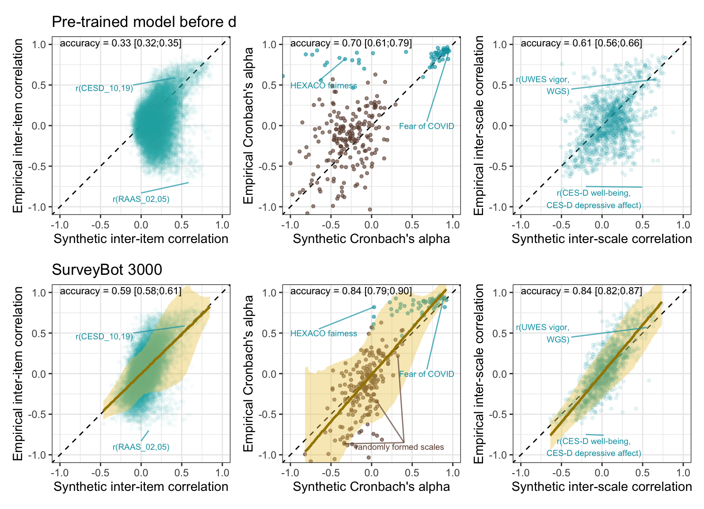
library(patchwork)
(plot_prediction_error_items +
coord_cartesian(xlim = c(-1, 1), ylim = c(0, 0.4)) +
annotate("text", size = 3, x = -1, y = 0.4, vjust = 0, hjust = 0, label = with(rmse_items, { sprintf("RMSE = %.2f [%.2f;%.2f]", sigma, .lower, .upper) })) +
plot_prediction_error_alpha +
coord_cartesian(xlim = c(-1, 1), ylim = c(0, 0.4)) +
annotate("text", size = 3, x = -1, y = 0.4, vjust = 0, hjust = 0, label = with(rmse_alpha, { sprintf("RMSE = %.2f [%.2f;%.2f]", sigma, .lower, .upper) })) +
plot_prediction_error_scales +
coord_cartesian(xlim = c(-1, 1), ylim = c(0, 0.4)) +
annotate("text", size = 3, x = -1, y = 0.4, vjust = 0, hjust = 0, label = with(rmse_scales, { sprintf("RMSE = %.2f [%.2f;%.2f]", sigma, .lower, .upper) }))
)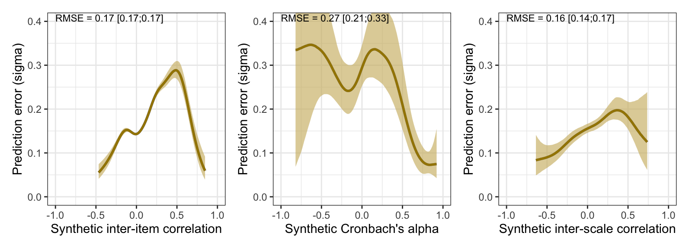